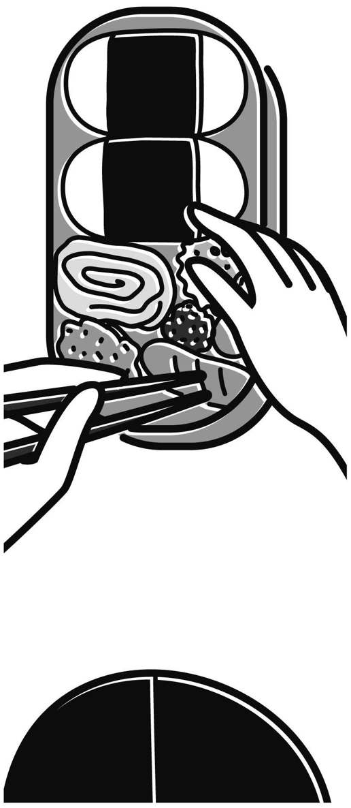
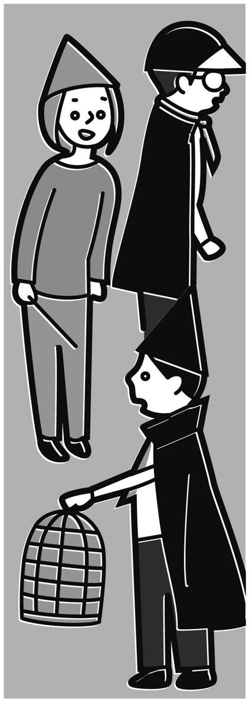
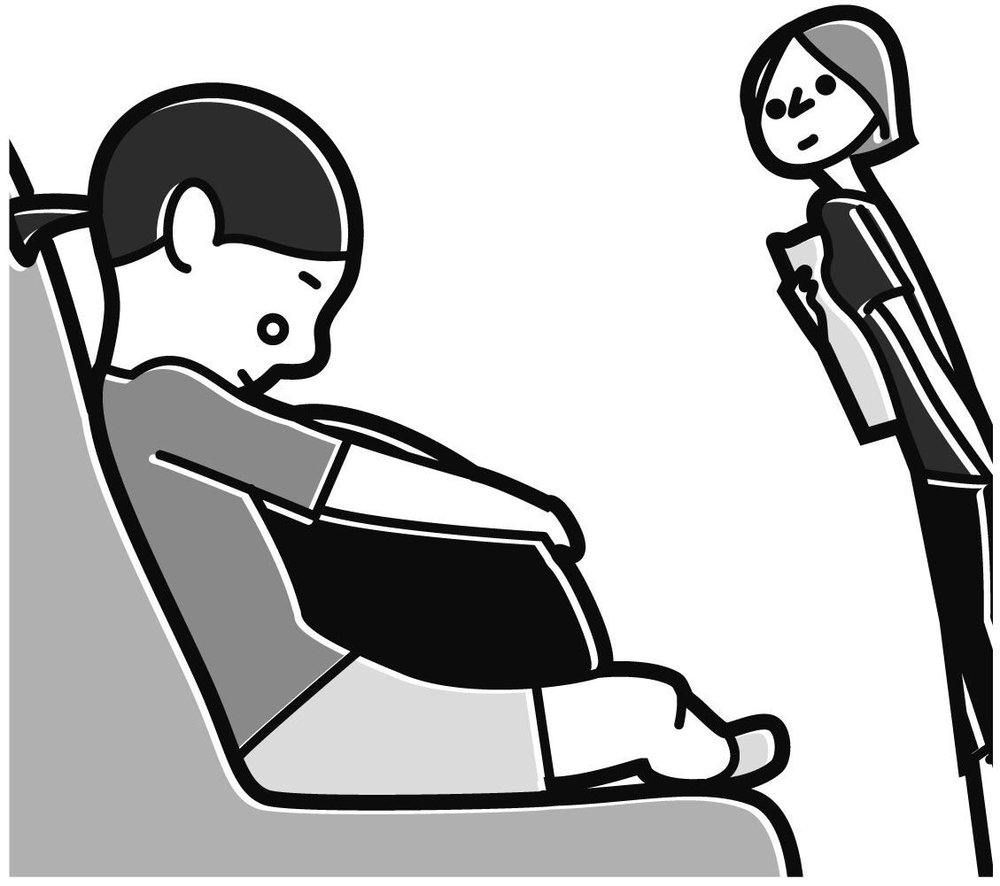
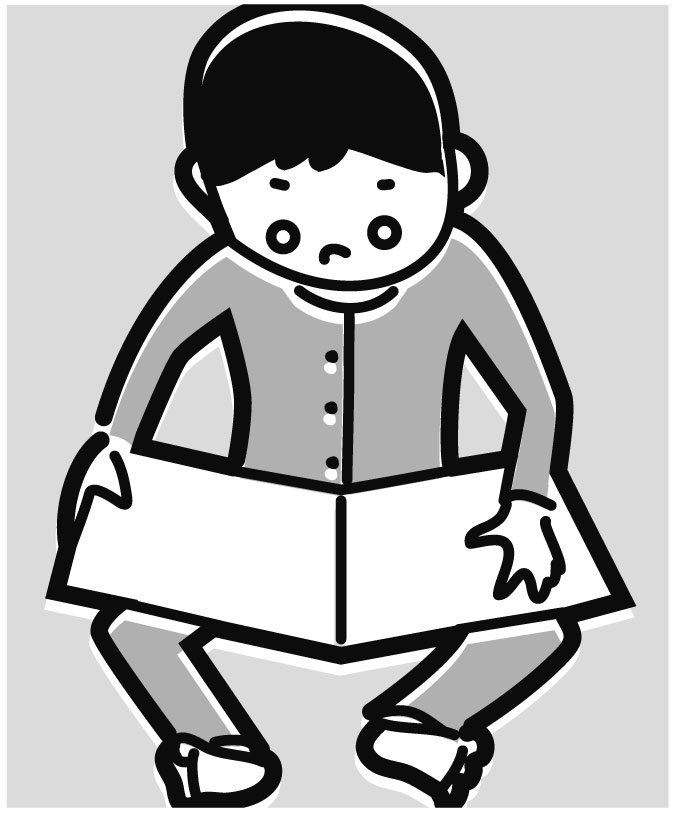
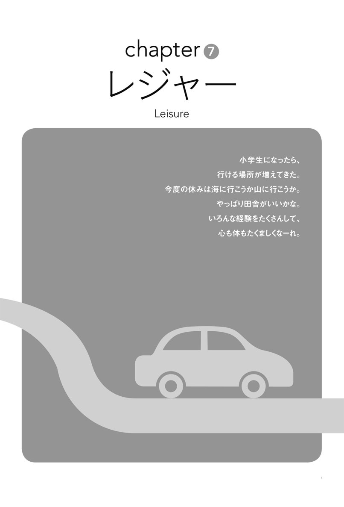
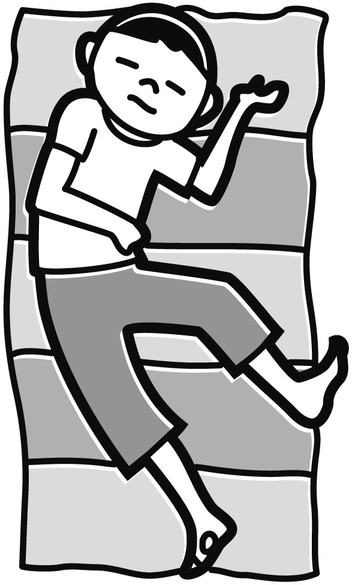
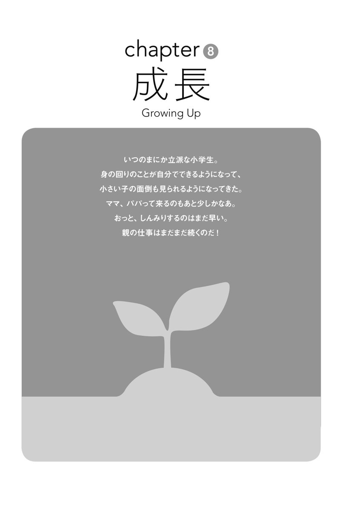
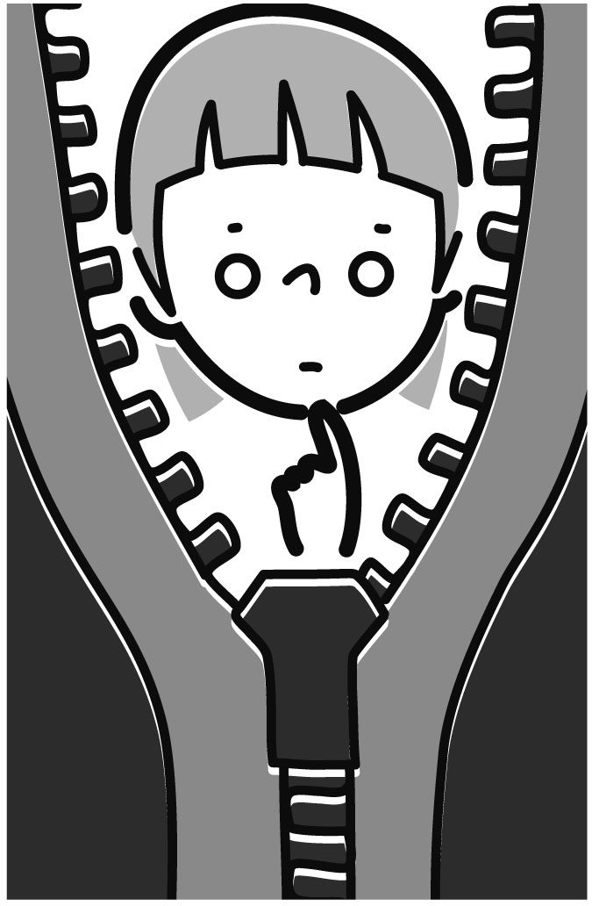

| [音声DL付]起きてから寝るまで子育て英語表現600 わんぱくキッズ編 起きてから寝るまでシリーズ | |
| Unknown | |
| (2016) | |
※参照項目から元の箇所に戻るには、お使いのビューワーの仕様に従ってください。または一旦目次を表示し、戻りたい箇所の近くの見出しをタップして戻ってください。
はじめに
「起きてから寝るまで」シリーズの子育て表現編が最初に出版されてからほぼ20年。単に英語の表現集としてだけでなく、子育てに奮闘しているお母さんの精神的支えとしても大勢の人に親しんでいただいたその本は、一昨年、時代の変化に合わせ「完全改訂版」として生まれ変わった。本書は、その『完全改訂版 起きてから寝るまで子育て英語表現600』の続編にあたる。
子育ての喜びや苦労は、子どもが大きくなり小学生になると、それまでとは異なる形で現れる。子どもは家庭を少しずつ離れて子ども社会に入っていき、親もそれに合わせて、子どもとコミュニケーションを取りながら成長していく。本書ではそのような観点から、小学校入学〜低学年の子どものいる家庭を舞台に、学校、放課後、休日、レジャー、そして子どもの成長をめぐるさまざまな場面を取り上げた。
● 本書の考え方
本書の基本的な考え方について説明しよう。「起き寝る」は、1. 行動、2. 状況描写、3. 気持ち、4. 思い の４つを組み合わせて、英語を総合的に、体験的に学ぶ、という考え方に基づいて編まれている。
例えば、次の例は、子どもが学校から帰宅する場面だ。
She comes home from school. 下校する（行動）
She comes back with a proud look on her face. いい顔をして帰ってくる（状況）
I ask her how her day was. 今日はどうだったか聞く（行動）
I am there for her. 子どもに寄り添う （思い）
このような日常的な出来事を、独り言として多面的に英語で表現する。それを口に出したり、心の中でつぶやいたりすることを毎日続けることによって英語力を付けていくのである。
子どもが学校に通い始めると、いろいろなことが起こる。朝、何度起こしても起きない。ギリギリになってやっと家を飛び出したら、お弁当を忘れていることに気づく。学校ではうまくやっているのだろうか。授業参観でなんで手を挙げないのだろうとヤキモキする。友達ができる。異性の友達ができると、相手が気になる。どんな子だろう。学校が終わったら、塾、サッカー、野球、ピアノ、バイオリン、そろばんと大変だ。でも、子どもにとっては、それが社交場になっているのかもしれない。
家族で過ごす時間も変わってくる。一緒に旅行をする。渋滞や混雑はいらいらするが、子どもと一緒だと結構楽しく過ごせる。家にいるとゲームばかり。勉強しなさいと言っても、聞かない。きょうだいげんかをしているかと思うと、仲良く一緒に遊んでいる。口答えばかりしているのに、いざというときは親が頼り。憎ったらしいと思う。でも、やっぱりかわいい。
親の生活も変わる。一緒に成長していくんだな、と思う。そんな素晴らしい家族生活を少しでも英語で表現できたらどんなに楽しいだろう。本書がそのような体験のきっかけになればと願ってやまない。
2016年1月 吉田研作
目 次
Contents
本書の構成と使い方
How to Use This Book
本書全体の構成と使い方
■ 親子の朝起きてから夜寝るまでのシーンを８章に分けています。
■ まずは全体に目を通しましょう。それから、自分の興味のあるフレーズを繰り返し練習し、少しずつ使える表現を増やしていきましょう。
■ 各章は、「単語編」「体の動き」「つぶやき表現」「Quick Check（クイズ）」に分かれています。
各章の構成と使い方
［単語編］
■ 各章に登場する単語をイラストとともに紹介。ここで、各章のイメージをつかみましょう。
※イラスト内の日本語を英語にできるかどうか試してみましょう（解答は次の欄）。
［体の動き］
■ ここでは主に、普段何気なくしている親子の行動・行為をI~（私は～する）、He/She ~（彼／彼女は～する）の形で紹介しています。つぶやき練習の基本となるものです。普段の行動を振り返りながら繰り返し練習し、英語で言えるようにしましょう。
※１ 無料ダウンロード音声には、本書の例文を全て「日本語→英語」の順で録音しています。一通り学習したら、次は日本語を聞いてすぐ英語にする練習をしてみましょう。
※２ 子どもの動きは、親の動きはで表しています。
※３ 発音に注意が必要な箇所にはカタカナが付いています。
｜ ｜はカタカナに対応する英語が３語以上に渡る場合の範囲を表します。
※４ 例文の一部には、表現の理解の助けとなる解説が付いています。
［つぶやき表現］
■ ここでは主に、パパやママが心の中で考えたり感じたりすることを英語で表現しています。気持ちを上手に伝えるためには、自分の「心の中」を英語で表現できることが大切です。自分の考えや気持ちを言葉にする習慣を作り、会話力アップにつなげましょう。
※「つぶやき表現」の中には子どもへの語り掛けも含まれています。まずは繰り返し練習し、英語を口に出す習慣を作りましょう。英語がぱっと出るようになると、英語での語り掛けも自然にできるでしょう。
※見出しの和文と英文は、必ずしも直訳の関係ではありません。こんな気持ちを英語で言うとどういう表現になるのか、という例として挙げられています。
［Quick Check］
重要フレーズをちゃんと覚えられたか、各章の最後にクイズでチェックしましょう。
ここもCheck!
Dialogues 参照
各章に出てきた表現を使った、会話形式のストーリーです。実際の会話でどう使うのか参考にして、繰り返し自分でも言ってみましょう。
音声ファイルのダウンロードと
再生方法、ダウンロード特典
アルクダウンロードセンターより無料でご利用いただけます！
※PC・スマートフォンアプリ「語学のオトモALCO（アルコ）」（無料）対応
アルクのメールアドレスIDをお持ちの方が対象です。
簡単なアンケートの記入をお願いしています。
＜入手方法＞
１）ダウンロードセンターにアクセスする
PCでダウンロードする場合：アルク ダウンロードセンター（http://www.alc.co.jp/dl/）にアクセスする。
スマートフォン上でダウンロードする場合：スマートフォンアプリ「語学のオトモ ALCO（アルコ）」（無料）をApp StoreもしくはGoogle Playダウンロードの上、ダウンロードセンターにアクセスする。
２）アルクのメールアドレスIDでログインする。
※お持ちでない方はhttp://www.alc.co.jp/dl/より登録の上、ご利用ください。
３）アンケートを記入する。
PCもしくは、アプリ（ダウンロードセンターボタンをクリック）より電子書籍版『起きてから寝るまで子育て英語表現600 わんぱくキッズ編』を選択し、アンケートを記入して送信する。コンテンツのダウンロード画面が表示されます。
※本書奥付に記載のPCコード（７桁）をご準備いただくと便利です。
※コンテンツのダウンロード画面に表示されているダウンロードボタンを押してください。ファイルは一部のPDFを除き圧縮（zip形式）されています。
４）コンテンツをダウンロードする。
＜パソコンでダウンロードする場合＞
ダウンロード後、圧縮ファイルは解凍ソフト（Lhaplusなど）で解凍の上ご利用ください。
＜スマートフォンアプリ「語学のオトモALCO（アルコ）」でダウンロードする場合＞
ダウンロード後、アプリ内で自動的に解凍され所定のフォルダに格納されます（PDFファイルは「ALCO」でご利用いただけません）。
◆PC上でダウンロードした音声ファイルについて
PCにダウンロードした圧縮ファイルを解凍ソフトで展開の上、iTunesなどの音声再生ソフトで取り込んでご利用ください。音声再生ソフトでのファイル取り込み方法や携帯音楽プレーヤーでの利用方法については、ソフトやプレーヤーに付属するマニュアルでご確認ください。
音声ファイルは、音声再生ソフトで次のように表示されます。
出版社名（アーティスト名）：「ALC PRESS INC.」と表示
書名（アルバム名）：『起きてから寝るまで子育て英語表現600 わんぱくキッズ編』
ダウンロードした音声はトラック番号が表示されます。
本書では、ダウンロードした音声を使用する部分はDL01 のように、ダウンロードした音声のトラック番号に対応しています。該当のトラックを再生して学習してください。
■収録内容
体の動き
つぶやき表現
Dialogues
■収録分数
76分
■収録言語
体の動き、つぶやき表現：日本語と英語
Dialogues：英語のみ
■トラック表
| 体の動き＆つぶやき表現 | トラック |
| chapter 1 | 01-02 |
| chapter 2 | 03-04 |
| chapter 3 | 05-06 |
| chapter 4 | 07-08 |
| chapter 5 | 09-10 |
| chapter 6 | 11-12 |
| chapter 7 | 13-14 |
| chapter 8 | 15-16 |
| Dialogues | トラック |
| chapter 1 | 17-18 |
| chapter 2 | 19-20 |
| chapter 3 | 21-22 |
| chapter 4 | 23-24 |
| chapter 5 | 25-26 |
| chapter 6 | 27-28 |
| chapter 7 | 29-30 |
| chapter 8 | 31-32 |
■無料特典ダウンロードについて
本書では、もっとつぶやきたい人のために「つぶやき表現番外編」「小学生のつぶやき表現30」を紹介しています。音声は、MP3ファイルをダウンロードできます。本書と併せてご利用ください。本書では、特典音声ファイルは、次のように表示しています。
例：トラック01の場合 DLMP3_01
（2016年4月1日時点の情報。今後詳細が変更になる可能性があります）
chapter 朝
朝
Words単語編
まずは、１章に登場するさまざまな単語を見て、「朝」のシーンのイメージをつかもう。
|
アラーム | alarm |
 |
目を覚ます | wake up |
| 寝ぼけて | half asleep | |
 |
あくびをする | yawn |
 |
お腹 | tummy |
| だるい | feel groggy | |
 |
体温 | temperature |
| パジャマ | pajamas | |
 |
服 | outfit |
 |
お気に入りのシャツ | favorite shirt |
 |
靴下 | socks |
 |
時計を読む | tell the time |
 |
朝食 | breakfast |
| 野菜 | vegetables(veggies) | |
| ビタミン | vitamin | |
| 弁当（箱） | lunch box | |
 |
茶わん | bowl |
 |
シンク | kitchen sink |
 |
スマートフォン | smartphone |
 |
アプリ | app |
 |
植物 | plant |
| 朝顔 | morning glory | |
| ペット | pet | |
| 持ち物 | belongings | |
| ランドセル | schoolbag | |
| ハンカチ | handkerchief(hankie) | |
 |
運動靴 | sneakers |
| 傘 | umbrella |
chapter 朝
体の動き
DL01
は子どもの動き は親の動きを表します
１ 身支度を整える
Iget myselfdressed.
 get dressedだけでも「服を着る」だが、get myself dressed firstのように言えば、「（子どもより先に）まずは自分の身支度を整える」という表現になる。
get dressedだけでも「服を着る」だが、get myself dressed firstのように言えば、「（子どもより先に）まずは自分の身支度を整える」という表現になる。
２ 子どもを起こす
I wake herup.
３ 寝ぼける
She is still half asleep.
half asleepは「半分眠って、寝ぼけて」。
４ 二度寝する
She goes back to sleep.
go back to sleepは「眠りに戻る、再び眠る」。
５ 自分でアラームを止める
Sheturns off the alarm by herself.
turn off ~は「～（アラーム・テレビ・明かりなど）を消す」。
６ 一人で起きる
Shewakes up by herself.
wake upは「目を覚ます」。by oneselfは「自分だけで、一人で」。
７ 寝冷えする
She caught a chill during her sleep.
「寝冷え」に当たる言葉は、英語では特にないが、catch a chillで「（体が）冷える」という意味。ここでは、朝に「睡眠中」の出来事について言っているので、過去形になっている。
８ あくびをする
Sheyawns.
９ 顔を洗う
She washes her face.

10 タオルで顔を拭く
Shepats her face drywith a towel.
pat ~ dryは「軽くたたくようにして～の水気を取る・拭く」。
11 髪の毛を結ぶのを手伝う
I help her tie her hair.
help ~ (to) doで「～（人）が...するのを手助けする」。to doのtoは省略されることが多い。
12 服を選ぶ
She chooseswhat to wear.
13 パジャマを脱いで畳む
Shetakes off her pajamas and folds them.
pajamasは「パジャマ」。上下でひとそろいなので複数形で使う。
14 前日に選んでおいた服を着る
Sheputs on the outfit shepicked out thenight before.
outfitは「（ひとそろいの）衣服」。コーディネートされた装い一式を指すのに便利な言葉。例）I like your outfit.（その服、すてきね）
15 靴下をはく
Sheputs on her socks.
16 朝食の用意をする
Ipreparebreakfast.
prepareは「～を準備する、用意する」。cook breakfastとも言える。
17 お弁当を詰める
I pack her lunch box.
pack a lunch boxは「お弁当を詰める」。

18 スマホをチェックする
I check mysmartphone.
19 お天気アプリをチェックする
Icheck the weatherapp.
「アプリ」は、英語でapplication、略してappと言う。
20 朝食を食べる
Weeat breakfast.
have breakfastと言うこともできる。
21 時計の読み方を教える
I teach her how to tell the time.
「時計を読む」はtell the timeと言う。
22 食卓の片付けを手伝う
She helps clear the table.
clear the tableは「食事を下げる、食卓を片付ける」という意味。
23 植物に水をやる
She waters the plants.
他動詞としてのwaterは「〜に水をかける、水をまく」という意味。
24 ペットの世話をする
She takescare of our pet.
take care of ~は「〜の世話をする」。
25 持ち物を確認する
She checks herbelongings.
「所持品」の意味のbelongingsは、常に複数形で使う。
26 ランドセルを背負う
She carries her schoolbag on hershoulders.
carry ~ on one's shouldersは「～を背負う、かつぐ」。shoulderは「肩」で、複数形の場合、広く上背部を指す。
27 運動靴を履く
Sheputs on hersneakers.
sneakersは「スニーカー、運動靴」。イギリス英語ではtrainersと言う。
28 友達と待ち合わせる
Shemeets upwith her friends to go to school.
meet upはmeetと同じ「会う」という意味だが、特に「（何かを一緒にするために）会う」と言いたいときに使うことが多い。
29 間に合うように送り出す
I get herout the door on time.
30 集団登校をする
She goes to schoolin a group.
chapter 朝
つぶやき表現
DL02
１ ああ、よく寝た。
I'vehad a good night's sleep.
have a good night's sleepは「一晩ゆっくり眠る、よく眠る」。
２ コーヒーが飲みたい。
I need my coffee.
「コーヒーが飲みたい」はI want to have a cup of coffee.だが、I need my coffee.と言うと、朝の一杯をとても欲している様子が伝わるフレーズになる。
３ 朝ご飯何にしよう。
What shall we have for breakfast?
助動詞shallは、Iかweを主語とした疑問文で用いると、提案をしたり、助言を求めたりするフレーズになる。例）Shall we dance?（踊りましょうか）
４ 子ども起こさなくちゃ。
It's time Iwoke herup.
It is time＋主語＋過去形は「そろそろ～してもいいころだ（なのにしていない）」のように、するべきことを現実ではしていない事実を言うときに使う仮定法過去の文。
５ そろそろ自分で起きてくれないかな。
She reallyshouldstart toget up by herself.
get upは「（目覚めて）起き上がる」で、get up by oneselfで「自分で起きる」（⑥参照）。really should ~は「まさに～すべきである」という意味。
６ すごい寝相......。
How did sheend up in this position?
このフレーズを直訳すると「どうやってこの体勢になったの？」。end up ~は「最後には〜になる、〜に終わる」。「寝相」はsleeping positionやsleeping postureなどと言う。
７ またお腹出してる。
Hertummy isshowing again.
tummyはstomach（腹）の小児語で、「お腹、ポンポン」。
８ だるいの？
Are you feelinggroggy?
feel groggyは「ひどくだるい感じがする、疲れている」という意味。
９ 寝冷えしたかな。
Perhaps youcaught a chill while you were sleeping.
catch a chill（体が冷える）は、catch a cold（風邪をひく）と同じ意味で使うこともある。
10 お熱測ってみようか。
Let'stake yourtemperature.
take ~'s temperatureは「～の体温を測る」。
11 おはよう！ 目覚まし鳴ったよ。
Good morning! Your alarmwent off.
go offは「（警報装置、アラームなどが）作動する」。
12 早く起きないと学校に遅れるよ。
You'd better get up, or you'll belate for school.
You'd(=You had) better ~は「〜した方がいい、〜しないと困った事になる」という、忠告や命令の表現。orは「さもないと」という意味。
13 ほら、ダラダラしない。
Come on,chop-chop.
Come on.は「ほら、さあ」、chop-chopは「早く早く！、急いで！」という意味。
14 今朝はすっきり起きられたね。
You're up bright and early this morning.
upは「起きて」。bright and earlyは「（余裕をみて）朝早くに」という意味。bright and breezy（生き生きとした、朗らかな）という表現もある。
15 お、自分で起きられたね！
Wow, yougot up on your own!
get up on one's ownも「自分で起きる」という言い方（⑥参照）。
16 顔洗って、着替えておいで。
Go wash yourface and change.
Go (and) ~と命令形で言えば、「さあ〜しておいで」と行動を促す表現になる。andは省略することができる。changeは「着替える」。
17 お気に入りのシャツ、洗っといたよ。
Your favorite shirt has beenwashed.
favoriteは「お気に入りの、大好きな」。ここではシャツを主語として受動態で言っているが、I've washed your favorite shirt.と能動態でも言える。
18 それ、とても似合うね。
That looks sonice on you.
so niceの代わりにso goodやgreatを使うことも多い。人を主語にしてYou look so nice.と表現することもできる。
19 センスいい！
You havegreat taste in clothes!
have great/good taste in ~は「〜の趣味が良い」という意味。
20 あれ、左右別の靴下はいてるよ。
Oh, your socks don't match.
matchは「（２つの物が）釣り合う、調和する」。your socks don't matchで「あなたの左右の靴下がちぐはぐだ、合っていない」という表現になる。
21 慌てんぼうだなあ。私に似たかな......。
She's abit of ascatterbrain. Just like me ...
scatterbrainは「そそっかしい人、おっちょこちょいな人」。a bit of ~（ちょっとばかり～）を付けることで、言葉のきつさを和らげることができる。
22 またそれ着るの？
Are you going to wearthat again?
一度気に入れば同じ服ばかり着たがる子どもに、思わず聞いてしまうときのフレーズ。
23 よっぽど気に入ってるのね。
You must reallylike it.
このmustは「きっと〜だ、〜に違いない」という推量を表している。
24 髪の毛伸びたね。そろそろ切らなきゃ。
Your hair isgetting longer. You'llneed a haircut soon.
need a haircutで「髪を切る必要がある」。
25 朝ご飯、食べるよ～！
Breakfast isready!
Breakfast is ready.は「朝食の用意ができたよ」と家族に声を掛けるときの定番表現。lunch（昼食）やdinner（夕食）も同じように言う。
26 時計見てる？
Are youchecking the time?
check the timeは「時間を確認する、時刻を気にする」。
27 大丈夫。まだ間に合うから。
Don't worry. You'll stillmake it on time.
急いで準備をするよう促しながらも、焦ってパニックにならないよう声を掛ける表現。make it on timeで「間に合う、時間通りにたどり着く」。
28 朝って全く余裕がないなあ。
We're alwaysin a rush every morning.
in a rushは「大急ぎで」。
29 お、今朝は余裕があるね。
Wow, we still have somespare time this morning.
have some spare timeは「空き時間がある」。
30 あと30分早く起きてくれれば慌てなくて済むのに。
Thingswouldn't be ashectic if you got uphalf an hour earlier.
これは、「起きるのが遅いため、毎朝大忙し」という現在の事実とは反対の仮定・想像をする、仮定法過去（If＋主語＋動詞の過去形, 主語＋would/should/could＋動詞の原形）の文。hecticは「慌ただしい」。
31 お野菜しっかり食べないとビタミン不足になっちゃうよ。
Eat up yourvegetables, or you won'tget enoughvitamins.
eat up ~は「〜をぺろりと食べる、平らげる」。
32 最近、食べられる野菜が増えたなあ。
She's beeneating a widervariety ofveggiesrecently.
a wide variety of ~は「多くの種類の～」。wideがwiderと比較級になっているので、「（以前と比べて）より幅広い種類の」という意味を表している。veggieはvegetable（野菜）の口語表現。
33 給食のおかげだな。
It's all thanks to school lunch.
thanks to ~は「〜のおかげで」。school lunchは「給食」。school mealとも言う。
34 食べたお茶わん、流しに片付けてね。
Can youput your emptybowl in the kitchen sink?
bowlは「ボウル、わん」。kitchen sinkは「台所のシンク・流し」。Put your ~と命令形で言うばかりではなく、Can you ~? と依頼の形で言った方が、お手伝いをする気になるときもある。
35 朝顔のお世話しておいで。
Go and take care of your morningglory.
morning gloryは「朝顔」。
36 お、さやに種ができてるね。
Oh,look at the seeds in the pods.
look at ~は、子どもの注意を何かに向けたいときのフレーズ。podは「（種子の）さや」。
37 そろそろお友達が呼びに来るよ。
Your friends will be here soon tocome and get you.
come and get youで「迎えに来る」。「迎えに行く」も同様にcomeを使って表現する。例）Do you want me to come and get you?（迎えに行こうか？）
38 日差しが強いね。
Thesun is strong.
「日差し」はsunshineと言うこともできる。例）The sunshine is strong today.（今日は日差しが強い）
39 帰りは雨が降りそうだね。
It looks like it'sgoing to start rainingaround the time you come home.
It looks like it's going to ~は、天気が変わりそうだと言いたいときの定番の言い方。例）It looks like it's going to snow.（雪でも降りそうですね）
40 傘持ってく？
Do youwant totake your umbrella with you?
このDo you want to ~？ は、「〜したいですか？」と相手の意向を聞いているというより、「〜しない？」「〜すれば？」と軽く誘ったり勧めたりするときの表現。
41 ハンカチ、ポケットに入れたかな？
Do you have yourhankie in your pocket?
hankieはhandkerchief（ハンカチ）の略。
42 今日学校から帰ったら、ピアノ教室だからね。
You have a piano lesson when youget home today.
get homeは「家に着く」。
43 車に気を付けて。
Watch out for thetraffic.
watch out for ~は「〜に注意する、気を付ける」。be careful of ~も同じ意味。
44 元気よくあいさつしようね。
Saygood morningin a niceloud voice,OK?
「あいさつをする」はgreetという語があるが、どちらかというと丁寧にあいさつをする場合（③参照）や、「出迎える、歓迎する」という場面で使う。例）We greeted the guests at the door.（お客さまを玄関で出迎えた）
45 行ってらっしゃい！
See youlater!
See you later.は「後でね」という意味。「行ってらっしゃい」に相当する言葉は英語には特になく、家族を見送るときなどにはHave a nice day.（良い一日を）と言ったりする。
46 今日も一日、頑張ろっと！
Today'sgoing to be agreat day!
直訳すると、「今日は素晴らしい一日になるぞ！」という意味で、自分を鼓舞するときに使える表現。
Quick Check
本章に出てきたフレーズを復習しましょう。次の日本語の意味になるよう英文を完成させてください。答えはこちらにあります。
寝冷えする。 参照
She（ ）a（ ）during her sleep.
あくびをする。 参照
She（ ）.
前日に選んでおいた服を着る。 参照
She puts on the（ ）she（ ）out the night before.
お天気アプリをチェックする。 参照
I check the weather（ ）.
ペットの世話をする。 参照
She（ ）（ ）of our pet.
今朝はすっきり起きられたね。 参照
You're up（ ）and（ ）this morning.
それ、とても似合うね。 参照
That looks so（ ）（ ）you.
朝って全く余裕がないなあ。 参照
We're always（ ）a（ ）every morning.
そろそろお友達が呼びに来るよ。 参照
Your friends will be here soon to（ ）and（ ）you.
車に気を付けて。 参照
（ ）（ ）for the traffic.
caught/chill yawns outfit/picked app takes/care bright/early nice/on in/rush come/get Watch/out
chapter 1のフレーズを使った会話もチェックしてみましょう 参照

chapter 学校
Words単語編
まずは、２章に登場するさまざまな単語を見て、「学校」のシーンのイメージをつかもう。
|
小学校 | elementary school |
|
入学 | enrollment |
| 授業・クラス | class | |
|
先生 | teacher |
|
１年生 | first grader |
| 学校公開（授業参観） | parents' day | |
|
保護者会 | parent-teacher conference |
| PTAのイベント | PTA event | |
|
学校の持ち物 | school goods |
|
テスト | test |
|
お便り | school note |
|
面談 | parent-teacher meeting |
|
給食 | school lunch (school meal) |
| 休み時間 | recess | |
| 図書室 | school library | |
| 本 | book |

|
遠足 | field trip(excursion) |
|
リュック | backpack |
|
お茶 | tea |
|
運動会 | sports day |
|
ビデオに撮る | record |
| 写真 | picture | |
| 徒競走 | race | |
| １位 | first place | |
| ダンスの動き | dance moves | |
| 練習 | practice | |
|
学芸会 | school play |
| 舞台 | stage | |
| 衣装 | costume | |
| せりふ | line |
chapter 学校
体の動き
DL03
は子どもの動き は親の動きを表します
１ 入学の準備を整える
I get everything ready forenrollment.
enrollmentは「入学」。「入学する」はenroll in school。
２ 学校の持ち物に名前を書く
I write his name on all hisschool goods.
goodsは複数形で「品（物）」。「学校用品」はschool thingsとも言う。
３ 先生にあいさつをする
I greet the teacher.
「〜に（丁寧に）あいさつをする」と言うとき、greetを使う（㊹参照）。
４ 保護者会に行く
I go to a parent-teacherconference.
「保護者会」はparent-teacher conference。
５ PTAのイベントを手伝う
I help outat a PTA event.
「PTAのイベント」は、PTA function（functionは「会合、行事」）とも言う。
６ 学校公開（授業参観）に行く
I go to parents' day.
「学校公開」はparents' dayやschool open day/houseなどと言う。
７ 手を挙げる
Heraises his hand.
raise one's handで「挙手する」。

８ 先生に当てられる
He gets called on by the teacher.
call on ~は「（先生が）～（生徒）を当てる」。
９ テストを受ける
Hetakes a test.
「テストを受ける」はtake a test。「テスト」はexamとも言う。
10 先生に褒められる
He ispraised by the teacher.
praiseは「～を褒める」。
11 休み時間に友達と遊ぶ
He plays with his friends duringrecess.
recessは「休み時間」。
12 授業中にふざける
Hemisbehaves in class.
misbehaveは「無作法をする」。特に子どもが悪さをする場合に使う言葉。
13 先生に注意される
He getsreprimanded.
reprimandは「～を叱る」。先生など権威のある人が叱る場合に使う。
14 給食を残す
He doesn't finish his school lunch.
「給食」はschool lunch（㉝参照）。finish one's meal（lunch、dinnerなど）で「（残さず）食べ終わる」。
15 図書室で本を借りる
Heborrows a book from the schoollibrary.
16 ぞうきんがけをする
He uses adust cloth.
dust clothは「ぞうきん」。ほかにdusterやwiping ragなどとも言う。
17 遠足に行く
Hegoes on afield trip.
「遠足」はfield trip。excursionやschool tripなどの言い方もある。
18 運動会に行く
I go to sports day.
「運動会」はsports dayやathletic meetなどと言う。
19 学芸会を見に行く
I go to see the school play.
「学芸会」はschool play。

20 パフォーマンスをする
Heparticipatesin agroup performance.
group performanceは「団体で行うパフォーマンス」全般を説明する言葉。
21 徒競走に出場する
Heruns a race.
run a raceで「競走する、かけっこをする」。
22 １位になる
Hecomes infirst place.
「１位になる」はcome in first placeと言う。come firstだけでもよい。
23 舞台で演技をする
Heperforms on stage.
performは「演技する、歌う」。
24 ベストを尽くす
He does his best.
do one's bestで「ベストを尽くす」。
25 何とかやり遂げる
Hepulls it off.
pull it offは「うまくやってのける」。
26 応援をする
Icheerhim on.
cheer ~ onは「〜に声援を送る」。
27 拍手喝采を送る
I give the children a big round ofapplause.
give ~ a big round of applauseで「〜に盛大な拍手喝采を送る」という意味。
28 ビデオに撮る
I record him.
recordは「～を録画する、ビデオに撮る」。take/shoot a video of ~や、一語でvideoとも言う。
29 写真に撮る
I takepictures of him.
take a picture of ~は「～の写真を撮る」。
30 努力を褒める
Ipraise him for trying his best.
chapter 学校
つぶやき表現
DL04
１ もう小学生かあ！
He's inelementary school already!
「小学校」はelementary school。イギリスではprimary schoolと言うことが多い。
２ ついて行けるのかな～。
Is hegoing to be able tokeep up?
keep upは「（人と）同じ速度で進む、遅れないでついて行く」。
３ 名前を書く物が多くて大変。
There are so many things I have to write hisname on.
前置詞onが文の最後に来ているのは、後に続くはずのso many thingsが、文の構造上、前に行ってしまったため。I have to write his name on so many things.→There are so many things（that）I have to write his name on.
４ ランドセルが歩いているみたい。
It looks like the schoolbags arewalking on their own.
日本独自の通学かばん「ランドセル」はschoolbagでよい。詳しい説明としては、Randoseru are box-like backpacks.（ランドセルは箱形のリュックです）などと言える。
５ ランドセル、大切に使ってね。
Iwant you totake good care of your schoolbag, OK?
take good care of ~は「〜を大事に扱う、よく〜の手入れをする」。
６ きっと楽しい毎日になるよ。
I'm sure you're going to havegreat daysahead.
be sure ~は「〜を確信している、固く信じている」。aheadは「前途に、これから先に」という副詞。
７ １年生はみんなかわいいなあ。
All thefirst graders are soadorable.
first graderは「１年生」。２年生以降もsecond、third、fourthなどの序数＋grader（〜年生）で表すことができる。adorableは「かわいらしい」。
８ 担任の先生、誰になるかなあ。
I wonder who his teacher isgoing to be.
wonderは「〜かどうか知りたいと思う」。
９ 毎日頑張って学校に行ってるなあ。
He's doing so well, going to school every day.
do wellは「うまくいく」。
10 毎朝のリズムがつかめてきてよかった。
It'sgreat that we're starting toestablish a morningroutine.
establishは「～を確立する」。morning routineは「朝の日課・習慣」。忙しい朝に子どもが自分で支度できるよう、一連の動作を決めるのが重要だとして、子育て中の家庭でよく使われるフレーズ。
11 新しいお友達、できたかな?
Have you made any new friends?
make new friendsで「新しい友達を作る」。
12 今日は保護者会で学校に行くから、楽しみにしていてね。
I'm going to the conference today solook forward to seeing me at school.
look forward to ~ingは「〜することを楽しみにする」。
13 学校公開、ママとパパ交代で見に行くよ。
Mommy and Daddy will take turns tocome and see your class.
take turns to ~は「交代で・代わる代わる〜する」。
14 はつらつとして元気な子がいっぱいのクラスだなあ。
This class is filled withlively,energetic children.
be filled with ~は「〜でいっぱいである」。livelyは「はつらつとした、元気いっぱいの」、energeticは「エネルギッシュな、活動的な」という意味。
15 先生が子どもたちの注意をそらさないのがすごい。
It'samazing how the teacher manages to keep their attention.
manage to ~は「何とかやってのける」。keep ~'s attentionは「～（人）の注意をそらさない」という意味。
16 あれ？ なんで手を挙げないんだろう。恥ずかしいのかな。
Mm? Why doesn't heraise his hand? Is he beingshy?
He is shy.と言うと「彼は恥ずかしがりやだ」という意味だが、He is being shy.と現在進行形を使うと、「（今）恥ずかしがっている」と言うことができる。
17 お～えらい！ ちゃんと集中して聞いてるね。
Well done! He's listeningintently.
Well done! は「えらいぞ！、お見事！」と人を褒める言葉。listen intentlyは「熱心に耳を傾ける」という意味。
18 お友達と仲良くできてるみたい。あ〜、ほっとした！
He seems to begetting along with his friends.What a relief!
get along with ~は「〜と仲良くする、うまく付き合う」。What a relief! は「ああほっとした！、ああよかった！」という意味の表現。
19 あ～、机の中にお便りたまってる！
Oh, no.Look at all these school notesstuffed in his desk.
school noteは「学校からの手紙、お便り」。stuffedは「詰め込まれた」。ちなみにstuffed animalは「ぬいぐるみ」のこと。
20 わあ！ 最近の給食は、こんないいものが出るんだ！
Wow! They serve such nice food inschool mealsnowadays.
serveは「～（食事）を出す」。nowadaysは、過去との対比で「最近は、今日では」という意味の副詞。
21 当たり前にコンピューターの授業がある時代か。
Schools today havemandatory computer classes.
このtodayは「現代の、現在の」という意味。mandatoryは「必修の」。
22 最近の小学校って進んでるなあー。
Elementary schools have comesuch a long way since my time.
come a long wayは「大きな発展を遂げる、ずいぶん進歩する」。ここでのmy timeは「私が小学生だったころ」という意味。
23 学校ではどんなふうに過ごしているのかな。
I wonder how he spends his time at school.
spend one's timeは「時間を過ごす」。
24 外ではちゃんとやってるんだな。
He seems moremature than he does at home.
matureは「十分に成長した、（子どもや若者が）大人のように分別がある」という意味。doesはseems（〜のように見える）を言い換えたもので、文全体を直訳すると「彼は家にいるときよりも分別があるように見える」となる。
25 家ではどういうサポートをしてあげたらいいんだろう。
Howcan I support him at home?
supportは「～（人）を助ける、補助する」で、ここでは学業を含め、子どもの学校生活をどう補佐すべきか、ということを問うフレーズになっている。
26 今度の面談で、先生に聞いてみよう。
I shouldconsult his teacherat the next parent-teacher meeting.
consultは「～（専門家）に助言を求める、相談する」。parent-teacher meetingで「保護者面談」。
27 さあ、今日から新学期だ。
OK, we'reback to school today.
back to schoolは「新学期の」、特に９月からの「新学年」を指す言葉（欧米では新学年が９月から始まる）で、形容詞として使われる。例）The back-to-school sales have begun.（新学期セールが始まった）
28 明日の遠足の荷物、リュックに入れた？
Did youpack yourbackpack for tomorrow'sfield trip?
backpackは「リュックサック」。
29 お弁当に入れてほしいものはある？
What would you like me to pack for lunch?
would like ~ to doは「〜（人）に...してほしい」。ここでは、me（私）に何をお弁当に入れてほしいか、と聞いている。
30 遠足、こんなに遠くまで歩いて行くんだ。
They're walkingsuch a longdistance during theexcursion.
suchは「それほどの」。long distanceは「長距離」。
31 お茶、足りるといいけど。
I hope he won't runout of tea.
run out of ~は「〜を切らす、使い果たす」。won'tはwill notの縮約形。
32 校門が開くのって何時だったっけ。
What time do the school gates open?
school gatesは「校門」。
33 最近の運動会は流行りの曲が多いなあ。
They playa lot of hit songs at sports day nowadays.
hit songは「ヒット曲」。
34 誰か先生がこのアーティストのファンなんだな。
One of the teachers must be afan of this artist.
このmust be ~は「〜に違いない」という推量の意を表す。
35 ここならうまくビデオ撮れるかなあ。
I hope I've picked the rightspot to record him.
pickは「～を選ぶ、選定する」。right spotは「ぴったりの場所」。
36 ダンスの動き、みんなそろってる！
Everyone's dance moves are insync!
in syncは「同調して、一致して」という意味。syncは、synchronization（同時に起きること、同期すること）の省略形。
37 練習の成果が出たね～！
All thepracticepaid off!
pay offは「（努力などが）効果をもたらす」。
38 応援し過ぎてのどが痛い。
Icheered so much that mythroat hurts.
cheerは「応援する、歓声を上げる」。throatは「のど」。
39 （学芸会の）衣装、間に合ってよかった。
I'm soglad I could get hiscostume ready on time.
costumeは「衣装」。readyは「準備ができて、用意が整って」という意味。
40 劇のせりふ、つっかえないといいけど。
I hope he doesn'tstumble on his line.
stumble on ~は「〜につまずく」。lineは「せりふ」。
41 お！ あの子がせりふ言う番だ。
Oh! It's his turn to speak.
~'s turnは「〜の番」という意味。
42 うまく言えた！ ほっ、よかった〜。
Welldone!Whew, I'm sorelieved.
Whew!は安堵や喜び、または失望や疲労感などを表す擬音語。relievedは「ほっとして、安心して」という意味の形容詞。
43 うるうるしてきちゃった。
I'mwelling up.
well upは「（気持ちなどが井戸水のように）浮かび上がる、こみ上げてくる」という意味で、特に「涙がこみ上げる」と言うときに使う表現。
44 頑張ったね！ お疲れさま。
You weregreat! Well done!
「頑張ったね」は、ほかにGood job! やYou did great! などと言うことができる。
WordList
学校
ここでは、小学校の教科や教室にまつわる単語を紹介します。
| 教科 | school subjects |
| 国語 | Japanese language |
| 算数 | arithmetic |
| 理科 | science |
| 社会 | social studies |
| 家庭科 | home economics |
| 生活 | living environment studies |
| 外国語活動 | foreign language activities |
| 音楽 | music |
| 図画工作 | arts and crafts |
| 体育 | P.E.(physical education) |
| 総合学習 | the period for integrated study |
| 学年 | grade |
| 教室 | classroom |
| 図書室 | library |
| 理科室 | science lab |
| 音楽室 | music room |
| 保健室 | nurse's office |
| 体育館 | gym |
| 校庭 | playground |
親だっていろいろある！
つぶやき表現
番 外 編
［ 子育て編 ］ DLMP3_01
このページでは、本書で紹介しきれなかったつぶやき表現を、親のぼやきを交えてご紹介します。
（1）うちの子ほどよくしゃべる子、見たことない。
I've never met a child who is as chatty as mine.
※chatty：おしゃべりな
（2）ゲームしてるときだけはおとなしい......。
He's only quiet when he's playing video games.
（3）インドア派だなあ。たまには外でも遊んでほしいな。
She loves to play indoors. I wish she would play outside every once in a while.
※every once in a while：たまには
（4）あれだけ読み聞かせてきたのに、なぜ読書嫌い？
After all those years of bedtime stories, why does he dislike reading?
（5）お、本読んでる......と思ったらマンガか。
Hmm? Is that a book she is reading? No, it's a comic book.
（6）「もっと孫の顔を見せて」って言われてもなあ。
Come over and show us our grandchild more often, they say.
（7）行きたいのはやまやまだけど、予定が合わない......。
We really wish we could, but our schedules just don't match ...
（8）お友達はもうこんなに上手に文字が書けるのか。焦る～。
Some of his friends already have neat handwriting. He's already lagging behind.
※neat：整った、きちんとした、lag：遅れる
（9）いまだに駄々をこねるときがあって、疲れるわ。
She still has the occasional tantrum; it can get exhausting ...
※tantrum: かんしゃく
（10）ハロウィンの時期は、あちこちでお菓子をもらうなあ。
He gets candy wherever he goes around Halloween.
※candy：砂糖菓子（あめ、チョコレートなどの総称）
（11）特別なおもちゃを買うのは、誕生日だけだよ。
Special toys are for birthdays only.
（12）今年は早めにクリスマスプレゼント買っておこう。
I'll get a head start and buy the kids' Christmas presents early this year.
※head start：さい先のよいスタート
（13）そのシャツもう小さいのに......。よっぽど気に入ってるのね。
That shirt is quite small on you ... You must really like it.
※quite：かなり
Quick Check
本章に出てきたフレーズを復習しましょう。次の日本語の意味になるよう英文を完成させてください。答えはこちらにあります。
先生にあいさつをする。 参照
I（ ）the teacher.
授業中にふざける。 参照
He（ ）in class.
遠足に行く。 参照
He goes on a（ ）（ ）.
ベストを尽くす。 参照
He（ ）his（ ）.
応援をする。 参照
I（ ）him on.
先生が子どもたちの注意をそらさないのがすごい。 参照
It's amazing how the teacher manages to keep their（ ）.
お〜えらい！ ちゃんと集中して聞いてるね。 参照
Well done! He's listening（ ）.
お茶、足りるといいけど。 参照
I hope he won't（ ）（ ）of tea.
ダンスの動き、みんなそろってる！ 参照
Everyone's dance moves are in（ ）!
うまく言えた！ ほっ、よかった〜。 参照
Well done! Whew, I'm so（ ）.
greet misbehaves field/trip does/best cheer attention intently run/out sync relieved
chapter 2のフレーズを使った会話もチェックしてみましょう 参照
chapter 放課後
Words単語編
まずは、３章に登場するさまざまな単語を見て、「放課後」のシーンのイメージをつかもう。
|
家 | home |
|
学童保育 | after-school care |
| おやつ | snack(sweets) | |
|
成績表 | report card |
|
１学期の成績表 | first term report card |
| 友達 | friend | |
|
ニックネーム | nickname |
| （テレビ）ゲーム | video game | |
|
けんかする | have a quarrel |
|
仲直りする | make up |
|
トイレ | bathroom |
|
習い事 | after-school activity |
|
サッカーの練習 | soccer practice |
| スイミングスクールのバス | swimming school bus | |
| 野球チーム | baseball team | |
| 検定試験 | certificate exam(test) | |
|
バレエのレッスン | ballet lesson |
|
宿題 | homework |
|
問題 | problem |
|
宿題のプリント | homework handout |
chapter 放課後
体の動き
DL05
は子どもの動き は親の動きを表します
１ 下校する
She comes home from school.
come home from schoolで「下校する」。
２ 学童にお迎えに行く
I go topick her up from after-school care.
pick ~ upは「～（人）を迎えに行く」。「学童保育」はafter-school care。
３ ランドセルを片付ける
Sheputs away her schoolbag.
put away ~は「～を片付ける、しまう」という意味。
４ 手を洗う
She washes her hands.
wash one's handsで「手を洗う」。
５ おやつを出す
I give her alittle snack.
snackは「間食、おやつ」。a littleは「ちょっとした、少しの」という意味。
６ 一人でほっとする時間をあげる
I give her some time tochill out.
chill outは「落ち着く、冷静になる」。calm downやcool offとも言う。
７ 自分から話したくなるまで待ってあげる
I wait until she is ready to talk.
ready to ~は「〜する心づもりがある」という意味。

８ 子どもに寄り添う
I am there for her.
be there for someoneは「（必要とされたときに）人を助けたり受け止めたりすることができる」という意味。例）I'll be there for you.（あなたのそばにいるよ）
９ 今日はどうだったか聞く
I ask her how her day was.
10 成績表を見る
Itake a look at herreport card.
report cardは「成績表」。
11 友達と遊ぶ約束をする
She makes plans to playwith her friends.
make plansは「計画を立てる」。
12 家に戻る時間を確認する
I remind herwhat time I expect her home.
remindは「～に再認識させる」。expect ~ home at ...で「〜（人）が...（何時）に帰宅すると予期する」を意味し、at ...の部分をwhat timeで表現している。
13 友達を家に呼ぶ
She invites somefriends over.
invite ~ overは「〜を招待する」。
14 友達をニックネームで呼ぶ
She calls her friend by anickname.
15 友達とけんかする
Shehas aquarrel with her friend.
have a quarrel with ~は「〜とけんかする」。
16 仲直りする
Theymake up.
make upは「仲直りする」。
17 習い事に行く
She goes to an afterschool activity.
「習い事」はafter-school activityと言う。
18 サッカーの練習に送り出す
I send her off to soccer practice.
send ~ offは「～（人）を見送る」。「サッカー」は、北米ではsoccer、イギリスではfootballと言う。
19 バレエのレッスンの準備をする
She gets ready for herballet lesson.
get ready for ~は「〜の準備をする、〜に行く支度をする」。
20 スイミングのバスに乗る
Shegets on theswimming school bus.
21 休みたいとぐずる
Shewhines alittle about notwanting to go.
whineは「弱音を吐く、ごねる」。
22 なだめすかして支度をさせる
Icoax her toget ready.
coax ~ to ...は「〜（人）に...するよう説得する、〜をうまく説得して...させる」という意味。
23 検定を受ける
Shetakes acertificate exam.
「検定試験」はcertificate/certification exam。単にtestと言うこともある。
24 いい顔をして帰ってくる
She comes backwith aproud look on her face.
a proud lookは「誇らしげな顔、得意げな表情」という意味。
25 一緒に喜ぶ
Wecelebrate together.
26 宿題を見てあげる
I help her with her homework.
help ~ with ...は「～（人）の...を手伝う」。homeworkは「宿題」。
27 宿題をする
She does her homework.
28 音読をする
Shereads out loud.
read out loudで「音読をする」という意味。
29 分からないところを教えてあげる
I givepointers to help her understand.
pointerは「助言、アドバイス、示唆」。
30 一緒に問題を解いてみる
We trysolving a problem together.
solve a problemで「問題を解く」。
chapter 放課後
つぶやき表現
DL06
１ ただいま！
I'm home!
英語には「ただいま」に相当する表現はなく、I'm home.（帰ってきたよ）と言ったり、単にHi.と言ったりする。
２ はい、お帰り〜。
Hi. You're back.
「お帰り」は、Hi.やYou're back.（帰ってきたのね）などと言う。
３ おやつあるよ。手洗っておいで。
Here are some snacks.Go and wash up.
wash upは「手を洗う」。Go wash your hands.（手を洗っておいで）とも言う。
４ 自分の物はどこに置くんだっけ？
Where are yousupposed toput your things?
質問形式だが、答えを求めているのではなく、持ち物をしまうよう促す表現になっている。be supposed to ~は「〜することになっている」。
５ 夕食食べられなくなるから、おやつ食べ過ぎないでね。
Youdon't want to ruin your dinner, sodon't eat too many sweets.
ruinは「～を台無しにする、駄目にする」という意味。ruin dinnerで、「（間食をし過ぎて）夕食がまずくなる、食べられなくなる」という表現。ruin ~'s appetite（食欲が落ちる）という言い方もある。sweetsは「甘い物、お菓子」。
６ 今日一日、どうだった？
Howwas your day?
How was your day? は「今日どうだった？」と聞く表現。
７ 疲れてるみたいだね。大丈夫？
You looktired. Are you feeling all right?
look tiredは「疲れた顔をしている」。
８ 学童ではみんなどんな遊びをしてるの？
What does everyone play at after-schoolcare?
漠然と「学童はどう？」と聞くより、具体的な質問をした方が話しやすいこともある。
９ 今日、何かいいことあった？
Did anything nice happen today?
happenは「起こる」。
10 テストの点数が良かったの？ すごいじゃない！
You did well in your test? That'samazing!
「テストの点数が良い」は、ほかにget a high score on a testや、get a good grade on a testなどの言い方がある。amazingは「すごい、素晴らしい」。
11 １学期の成績表、もらったら見せてね。
Show me yourfirst termreport card when youget it.
first termは「１学期」。
12 遊びに行くの？
You'regoing out to play?
go outは「外へ出る、出掛ける」。
13 誰と遊ぶの？
Who are you playing with?
play with ~は「〜と遊ぶ」。
14 音楽が鳴ったら帰ってくるんだよ。
Come home when you hear the music, OK?
「〜時までに帰ってきなさい」と時刻を指定したいときは、Come home by ~o'clock.と言う。
15 小学校に入ると子どもだけの時間が急に増えるなあ。
Once in elementary school, theystart going off by themselvesall of a sudden.
このonceは「ひとたび〜すれば」という接続詞。go offは「立ち去る」。「もう行っていいよ、さあ行って」などと言いたいときには、Off you go.という言い方がある。all of a suddenは「急に」。
16 お友達とうちで遊んでもいいよ。
You can have some friends over if you want.
have friends overは「友達を家に呼ぶ」という意味。
17 いらっしゃい！ さあ、入って！
Hi!Come on in!
Come on in.は「さあ、どうぞ（家の）中に入ってください」。
18 久しぶりだね。
Ihaven't seen youfor a while.
for a whileは「少しの間」。I haven't seen you for a while.は「少しの間会っていなかったね、久しぶりだね」と言いたいときの表現。
19 みんな、まず手を洗おうか。
Everybody,go and wash your hands first.
Everybody, は「みんな」という呼び掛け。動詞の原形を使った命令文で行為を促している。
20 トイレはそのドアだよ。
The bathroom isthat door over there.
bathroomは本来「トイレを備えた浴室」で、アメリカでは「（家庭の）トイレ」を指す言葉になっている。お店などの「化粧室」はrestroomと言う。例）Can I use the bathroom?（お手洗いをお借りしてもいいですか）
21 何もめてるの？
What'sgoing on?
What's going on? は「どうしたの？、何が起こっているの？」と聞くフレーズ。何か楽しそうな様子のときにも使うことができる。
22 けんかするならゲームは終わりだよ。
No more video games if you're going to fight over them.
No more ~.は「それ以上〜ない」という言い方で、~ingを続けることもできる。例）No more fighting.（もうけんかはおしまい）。fight（けんかする）はしばしば「体を使ったけんか」を意味する。
23 みんな仲良くね。
You all play nicely, OK?
play nicelyで「仲良く遊ぶ」。
24 またいつでもおいで。
You cancome over anytime.
come overは「家に来る」。anytimeは「いつでも」。
25 野球チームに入りたいの？
Do youwant to join the baseball team?
join a teamは「チームに入団する」。
26 本当に野球が好きなんだねぇ。
You really like baseball,don't you?
really likeは「～が本当に好きだ」。
27 土日も練習頑張ってるね。
You'repracticing so hard, even on weekends.
practiceは「（上達するために）練習する」。even ~は「〜さえも」。
28 どうしたの？ レッスンに遅れるよ。
What's wrong? You'regoing to be late for your lesson.
What's wrong? は、様子がおかしい人に対して「どうしたの？」と問い掛ける言い方。Is everything all right?（大丈夫？）と聞くこともできる。
29 疲れてるなら今日のレッスン休んでもいいよ。
You canskip today's lesson if you're feeling too tired.
skipは「（授業・練習などを）休む、サボる」。
30 無理しなくていいから。
Take it easy, OK?
take it easyは「無理をしない」。
31 それ、本当にやりたいことなの?
Is it reallysomething that youwant to do?
something that you want to doで「あなたがやりたいこと」という言い方。例）I hope you can find something that you really want to do.（本当にやりたいことが見つかるよう願っています）
32 最終的には本人に任せるしかないか。
In the end, it'sup to her.
in the endは「とどのつまり、結局は」。up to ~は「〜次第」という意味。
33 今日は検定の日だね。
Today is the dayof your test.
そろばんや水泳などいろいろな「検定試験」があるが、testでよい（㉓参照）。
34 頑張ってね！ きっと受かるよ。
Good luck! You'll pass for sure.
Good luck. は「幸運を」だけではなく、「健闘を祈ります、頑張ってください」と言いたいときにも使う。passは「～（試験など）に合格する」。for sureは「確かに、きっと」。
35 残念だったね。次、頑張ればいいよ。
Too bad. Betterluck next time.
（That's）too bad.は「（それは）残念だね」という意味。Better luck next time.は「この次はきっとうまくいきますよ」という激励の言葉。
36 やったあ！ 頑張ってきたかいがあったね！
Way to go! It's all because you've worked so hard!
Way to go!は「よくやった！、いいぞ！」という言い方。
37 宿題のプリント、学校に忘れてきちゃったの？ 大変！
Youleft your homework handout at school? Oh,dear!
handoutは「印刷物、プリント」。Oh, dear.は「あら、まあ」という意味。
38 へー、こんなこと習ってるの？ 知らなかった。
Is this what you're learning now? Ididn't know that.
learnは「～を学ぶ」。
39 漢字の書き取り、私の時もやったなあ。
Iwrote down kanji back in my school days too.
「漢字」はJapanese kanji charactersやChinese charactersなどとも言う。
40 音読やったっけ？
Have youread yourtext out loud yet?
textは「文章、教科書」。read ~ out loudは「〜を音読する」。「音読する」はほかにread outやread aloudなどと言う。
41 この問題、どこが分からないの？
Whichpart of this problem doesn't make sense to you?
make senseは「うなずける、意味を成す」。doesn't make senseで「ふに落ちない、意味を成さない」。Why can't you do it?（なんでできないの？）など、やる気を削ぐような言い方は避けたいところ。
42 一緒にやってみよっか。
Let's tryit together.
Try it again.（もう一度やりなさい）と言うこともできるが、一緒にやってみよう、と声を掛けたいときに使う表現。
43 口出したいけど、がまんがまん。
Iwant to tell her how to do it, but I shouldn't.
44 まずはやる気を出させることだ。
Theimportant thing for now is to get hermotivated.
for nowは「ひとまず、差し当たり」。get ~ motivatedで「～（人）にやる気を出させる」。
45 宿題が終わったらテレビ見てもいいよ。
You can watch TV after you'vefinished your homework.
after you've finished your homeworkは、「宿題が終わったら」という意味で、子育て世帯ではよく使われる表現。after you've done your homeworkとも言う。例）You can play video games after you've done your homework.（宿題が終わったらゲームで遊んでもいいよ）
46 おっ、今日はちゃんとできてるねぇ。
Wow, I see you'veput in alot ofeffort today.
put in a lot of effortは「一生懸命する」。
Quick Check
本章に出てきたフレーズを復習しましょう。次の日本語の意味になるよう英文を完成させてください。答えはこちらにあります。
友達を家に呼ぶ。 参照
She（ ）some friends over.
友達とけんかする。 参照
She has a（ ）with her friend.
仲直りする。 参照
They（ ）up.
宿題を見てあげる。 参照
I（ ）her（ ）her homework.
音読をする。 参照
She reads（ ）（ ）.
夕食食べられなくなるから、おやつ食べ過ぎないでね。 参照
You don't want to（ ）your dinner, so don't eat too many sweets.
久しぶりだね。 参照
I haven't seen you for a（ ）.
野球チームに入りたいの？ 参照
Do you want to（ ）the baseball team?
残念だったね。次、頑張ればいいよ。 参照
Too bad.（ ）（ ）next time.
まずはやる気を出させることだ。 参照
The important thing for now is to get her（ ）.
invites quarrel make help/with out/loud ruin while join Better/luck motivated
chapter 3のフレーズを使った会話もチェックしてみましょう 参照
chapter 夜
Words単語編
まずは、４章に登場するさまざまな単語を見て、「夜」のシーンのイメージをつかもう。
|
夕食 | dinner |
|
料理 | cooking |
| こんろ | stove | |
|
食事 | meal |
|
デザート | dessert |
| 皿 | dish | |
|
箸 | chopsticks |
| 炭酸飲料 | fizzy drink | |
|
お風呂に入る | take a bath |
|
洗い残し | leftover suds |
|
腫れ | bump |
|
虫刺され | insect bite |
|
歯 | tooth |
| 乳歯 | baby tooth | |
| 永久歯 | adult tooth |
| 時間割 | timetable | |
|
教科書 | textbook |
|
連絡帳 | parent-teacher notebook |
|
体操服 | gym clothes |
|
スキンシップの時間 | cuddle time |
|
視力 | eyesight |
| 厚い本 | thick book | |
| 電気 | light | |
| 暗がり | dim light | |
| ベッド | bed | |
| 掛け布団 | comforter |
chapter 夜
体の動き
DL07
は子どもの動き は親の動きを表します
１ 夕食の準備をする
I prepare dinner.
prepareは「～を準備する、用意する」。cook dinnerでもいい。
２ 料理に興味を持つ
He becomesinterested in cooking.
become interested in ~で「〜に興味を持つようになる」。
３ 調理を手伝う
He helps me cook.
４ 配膳を手伝う
He helpsset the table.
set the tableは「食卓を整える、食卓に料理を並べる」。
５ 夕食を食べる
We have dinner.
「夕食」はdinnerのほかにsupperとも言う。
６ テレビを見る
He watches TV.
TVはtelevisionの略。
７ チャンネルを変える
He changes thechannel.
change the channelは「チャンネルを変える」。「リモコン」はremote control（「遠隔の制御装置」の意）と言う。
８ 一人でお風呂に入る
Hetakes a bath by himself.
「お風呂に入る」はtake a bathのほか、bathe（入浴する）という動詞がある。
９ 自分で髪を洗う
He washes his hair by himself.
10 体を洗う
He washes his body.
11 洗い残しを流してあげる
I help himrinse off the leftoversuds.
rinse off ~は「～を洗い流す」。leftoverは「残った」、sudsは「せっけんの泡」。
12 タオルで体を拭く
He dries himself with a towel.
dry oneself with a towelは「タオルで体を拭く」。towel dry oneselfとも言う。
13 歯磨きをする
Hebrushes his teeth.
「歯」はtooth。複数形はteethになる。
14 仕上げ磨きをしてあげる
I help him finish brushing his teeth.
help ~ finish brushing ~'s teethで「～の仕上げ磨きをしてあげる」。
15 乳歯を引っ張る
Hetugs on his baby tooth.
tug on ~は「〜をグイッと引っ張る」。「乳歯」はmilk toothとも言う。
16 永久歯をチェックする
I check hisadult teeth.
adult toothは「永久歯」。permanent toothとも言う。
17 時間割を確認する
He checks his timetable.
「時間割」は(class) timetable。time scheduleという言い方もある。
18 明日の持ち物を確認する
He checkswhat totake to school tomorrow.
19 教科書をランドセルに入れる
He packs his textbooks in his schoolbag.
textbookは「教科書」。
20 明日着る服を選ぶ
Hepicks out hisoutfit for tomorrow.
pick out ~は「～を選ぶ、選び出す」。代わりにchooseを使うこともできる。例）He chooses his outfit for tomorrow.
21 連絡帳を書く
Iwrite a note to the teacher in the parent-teacher notebook.
noteは「（短めの）手紙」という意味。「連絡帳」はparent-teacher notebookや、parent-teacher communication notebookなどと言う。
22 読書をする
He reads.

23 読み聞かせをする
Iread to him.
read to ~で「〜に読み聞かせる」。「読み聞かせの時間」はstory timeと言う。
24 お話の続きをせがむ
He asks me tocontinue reading.
continueは「〜を続ける」。
25 家事の手を休める
Istop doing the housework to make some time for him.
houseworkは「家事」。make some time for ~は「〜のために時間をつくる」。
26 少しの間子どもと遊ぶ
I play with himfor a while.
27 スキンシップをとる
I have somecuddle time with him.
cuddle timeは「（愛情を持って）寄り添う時間、スキンシップの時間」。
28 一日の終わりを静かに過ごす
Wewind downat the end of the day.
wind downは「（巻いたねじ・ぜんまい・緊張などが）緩む、ほどける」という句動詞で、「くつろぐ」という意味で使われる。
29 布団にもぐる
Hesnuggles under thecomforter.
snuggleは「心地よく横たわる、すり寄る」という動詞。snuggle under ~で「〜にもぐり込む」。comforterは「掛け布団」という意味。「毛布」はblanket。
30 電気を消す
Heturns off the light.
chapter 夜
つぶやき表現
DL08
１ 夕食の支度、お手伝いしてくれる？
Do youwant to help me cook dinner?
Do you want to ~? は「〜したい？」と聞く表現で、お手伝いしよう、という気持ちを引き出すのに便利な聞き方。
２ デザートはご飯の後だよ～！
You can have dessert after you've finished your meal!
dessertは「デザート」。finish a mealで「食べ終える」。
３ お皿とお箸を並べてくれる？
Can youset the dishesand the chopsticks?
set ~ (on the table) は「〜を（食卓に）並べる」。chopsticksは「箸」。set the tableで「食卓の用意をする」という言い方もある（④参照）。
４ こんろのそばでふざけちゃ駄目だよ。
Nofooling around near the stove.
fool aroundは「ばかなまねをする、ふざける」。このstoveは「こんろ」。
５ お手伝いはありがたいけど、余計時間がかかる〜！
Iappreciate the help, but it'staking me longer!
appreciateは「~をありがたく思う」。take longは「時間がかかる」。
６ でも、やる気があるのはうれしいな。
It'ssweet that he wants tohelp out,though.
このsweetは「かわいい、好感の持てる」という形容詞。thoughは文末に付けると、「でも～、けれど～」と、前の文（ここでは「手伝うのはいいけど時間がかかる」）を補足する表現になる。
７ よそ見しないよ。ちょっとテレビ消そうか。
Don'tlook away. Let'sturn off the TVfor a while.
look awayは「よそ見する、目を離す」。
８ 食事中に炭酸飲んじゃ駄目でしょ。
Nofizzy drinks with your meals.
fizzy drinkは「炭酸飲料」。soda popなどとも言う。
９ テーブルに肘をつかないよ。
Elbows off the table.
elbowは「肘」。Elbows off the tableは、食卓でのマナーを子どもに教える際の定番表現。
10 お手伝いしてくれたお料理、おいしくできたね！
This dish you helped me cook is delicious,isn't it?
「おいしい」はdeliciousやtastyのほか、子どもがよく使うyummyなどの言い方がある。
11 今夜、面白い番組あったっけ？
Is anythinginteresting on TVtonight?
面白いテレビ番組が放映されているかを聞くときの、決まった言い方。
12 おっと、チャンネル変えようか。
Oops, let's change thechannel.
oopsは「おっと、うわっ」という意味の間投詞。
13 怖くて夜眠れなくなっちゃうよ。
You'll be tooscared to sleep tonight.
be too scared to ~は「怖くて〜できない」という言い方。
14 じゃあ１回だけトランプするよ。
All right, we'll just have onegame of cards.
have a game of cardsで「トランプ遊びをする」という意味。「トランプ一組」はa deck of cardsと言う。
15 お風呂、一人で入る？
Can youtake a bath by yourself?
16 首の後ろを洗うの、忘れないでね。
Don't forget to wash theback of your neck.
Don't forget to ~.は「〜するのを忘れないで」と注意を促す表現。
17 髪の毛はしっかりすすぐんだよ。
Be sure to rinse your hairthoroughly.
Be sure to ~.は「必ず〜しなさい」という意味で、Don't forget to ~.と同じような意味。rinse thoroughlyは「しっかりすすぐ」で、髪に限らず、食器や衣類の洗浄についても使う。
18 体の洗い残しはないかな？
Have you washed everycorner of your body?
every corner of ~は「〜のすみずみ」という意味で、ここではわざと大げさな言い方をして、おどけた表現になっている。
19 ちゃんと洗えてるね。
You're cleanas a whistle.
(as) clean as a whistleは「とても清潔で」という意味の定番表現。whistleは「笛」で、笛の音は濁りがなく澄み切っていることから来ている。
20 お風呂から出たら早く体拭いてね。
Dry yourself with a towel assoon as youget out of thetub.
as soon as ＋主語＋動詞は「〜するとすぐに」。tubは「浴槽」。
21 ちょっとここ腫れてるね。虫に刺されたかな。
You have alittle bump here. Itmight be an insect bite.
bumpは「（体の）腫れ物」。insect（虫）bite（かむこと）で「虫刺され」。「かゆい？」と聞きたいときは、Is it itchy? と言う。
22 咳が止まらないね。咳止め飲もうか。
You've been coughing for a while. Let's take somecough medicine.
coughは「咳をする」。「咳止めシロップ」はcough syrup、「のど飴」はcough dropと言う。
23 仕上げ磨きするからごろんして。
Lieon your back so I can finish brushing your teeth.
lie on one's back「あおむけになる、横たわる」。
24 この歯、ぐらぐらしてる。そろそろ抜けそうだね。
Thistooth is loose. It'llfall out soon.
looseは「緩んだ、ぐらぐらしている」。
25 大人の歯が生えてくるから大丈夫だよ。
Don't worry, youradult tooth will come through soon.
Don't worry.は「心配しないで」。
26 明日の学校の準備はできてるの？
Have you packed your schoolbag for tomorrow?
27 明日ペットボトルいるんだ！ どうしよう、ないよ。
Youneed a plastic bottle tomorrow! Oh, no, we'reout of them!
「ペットボトル」はPET [polyethylene terephthalate] bottleが正式名称だが、単にplastic bottleと言うことも多い。out of ~は「〜を切らしていて、〜がなくなって」。
28 明日、体育あるんだっけ？
Do you haveP.E. tomorrow?
P.E.はphysical educationの略で、「体育」のこと。
29 体操服、洗ってない！
Yourgym clotheshaven't been washed!
gym clothesは「体操服」。P.E. clothesとも言う。
30 時間割ちゃんと見て、明日の用意してね。
Look at yourtimetableand get ready for tomorrow.
31 明日着る服、選んでおいたら？
Why don't youpick out youroutfit for tomorrow?
「服を選ぶ」は、pick out an outfit以外にも、choose what to wear（何を着るか選ぶ）や、choose one's own clothes（自分の服を自分で選ぶ）などの言い方もできる。例）Why don't you choose what you're going to wear tomorrow?（明日着るものを選んでおいたら？）
32 寝る準備できた？ お、ばっちりだね〜！
You're ready to go to bed?Perfect!
be ready to go to bedで「寝る準備ができる」。perfectは「非の打ちどころがない、完璧な」という意味。
33 図書室で何借りてきたの？ へ～、面白そう。
What did you borrow from the school library? Mm,it looks interesting.
school libraryは「学校の図書室」。interestingは「面白い、興味深い」という意味。
34 ずいぶん熱心に読んでるね〜。
You seemengrossed in the book.
be engrossed in ~は「〜に没頭する、〜に夢中になっている」という意味。ここではbeの代わりにseem（〜のようだ）が使われている。
35 暗いところで本を読むと目が悪くなるよ。
Reading in thedim light isbad for youreyesight.
dim lightは「ほのかな明かり、薄暗がり」。eyesightは「視力」。
36 もうこんなに厚い本が読めるんだ!
You're already readingsuch athick book!
thickは「厚い」。ちなみに「紙の書籍」はpaper book、「電子書籍」はelectronic bookやeBookなどと言う。
37 音読、上手になったね～。
You are sogood atreading out loud.
be good at ~で「〜が得意だ、〜が上手だ」。
38 今度はママが読んであげる。
Now it's my turn toread to you.
my turnは「自分の番」。
39 まだ読んでほしいの？ もう寝る時間だよ。
Youwant me toread on?It's your bedtime.
bedtimeは「寝る時間」。read onは「読み続ける」という意味の句動詞。
40 夜更かしすると起きられないよ。
Youwon't be able toget up if youstay up late.
if＋主語＋動詞の現在形, 主語＋will＋動詞の原形を使った条件の文は、「もし〜なら...だろう」という、未来に関する予測・推量を表す。
41 洗い物終わってないんだけどなあ......。
There'sstill a sink full of dishes ...
sinkは「台所のシンク・流し（=kitchen sink）」。~ full of ...は「〜（容器など）が...でいっぱいの、...がぎっしり詰まった〜」という意味。例）a glass full of wine（ワインのいっぱい入ったグラス）
42 まあ、たまには子どもと一緒にまったりするか。
Oh, well, I'lltake it easywith the kids for a change.
take it easyは「気楽にやる、焦らない」。for a changeは「たまには」。
43 はー、ベッドに横になるのって幸せ。
Mm,lying down on the bed isbliss.
blissは「至福、無上の喜び」という意味の名詞。Ignorance is bliss.は「無知は至福である」、つまり「知らぬが仏」という意味。
44 おやすみ。今日も一日頑張ったね。
Good night. You've had a full day today.
a full dayは「丸一日」だけれど、have a full dayと言えば「忙しい一日を過ごす（= have a busy day）」という意味になる。
WordList
持ち物
ここでは、持ち物に関する単語を紹介します。
| お道具箱 | toolbox |
| リコーダー | recorder |
| 鍵盤ハーモニカ | keyboard harmonica |
| 体操服 | gym clothes (P.E. clothes) |
| 赤白帽 | red and white cap |
| 上履き | indoor shoes |
| はちまき | sports headband |
| 習字セット | Japanese calligraphy set |
| 水彩絵の具 | water paints |
| 画用紙 | drawing paper |
| 筆箱 | pencil case |
| 下敷き | plastic sheet |
| セロハンテープ | Scotch tape |
| はさみ | scissors |
| のり | glue |
| 鉛筆削り | pencil sharpener |
| ホッチキス | stapler |
| 三角定規 | triangle ruler |
| 消しゴム | eraser |
| ノート | notebook |
親だっていろいろある！
つぶやき表現
番 外 編
［ 学校編 ］ DLMP3_02
小学生を持つ親にとって、避けて通れないのが保護者参加の行事。このページではPTAや保護者会など、「学校」にまつわる親のホンネをご紹介します。
（1）PTAの役員って、やった方がいいのかしら。
Should I volunteer to be a member of the PTA committee?
（2）今週はもう３日学校に来てる。
I've already been to school three days this week.
（3）保護者参加の行事が思っていたより多いな。
There are more events involving parents than I had imagined.
（4）どうせなら前向きにやろう。
I might as well enjoy the process.
（5）夏祭りは子どもが楽しそう！ こういうのはやりがいがあるよね。
The children are having fun at the summer festival. These are the kinds of events that are worth doing.
※worth doing：（～することは）価値があって
（6）時間は取られるけど、得ることも多かったかな。
As time-consuming as it is, it's also been rewarding.
※rewarding：（～する）かいがある
（7）PTAの連絡網で電話するのってなぜかちょっと緊張するのよね。
Why do I feel a bit nervous whenever I make a call through the PTA phone tree?
※phone tree：連絡網
（8）もうすぐ保護者会だ。
The parent-teacher conference is coming up.
（9）まだ知り合いも多くないから、少し気後れするな。
I haven't been acquainted with a lot of people yet, so it's slightly daunting.
※(be) acquainted with ~：〜（人）と知り合う、slightly：少し、daunting：気後れさせる
（10）この時間帯は来られない親も多いよね。
Many will find it difficult to attend at this time of day.
（11）今日（の保護者会）は出席率高いな。
The attendance rate is pretty high today.
※attendance：出席
（12）恐怖の夏休みがやって来る......。
The dreaded summer break is approaching ...
※dreaded：恐怖を引き起こす
（13）夏休みのお昼はついついそうめんばっかりになっちゃうな。
It seems we're constantly having somen for lunch during the summer holiday.
※constantly：いつも
Quick Check
本章に出てきたフレーズを復習しましょう。次の日本語の意味になるよう英文を完成させてください。答えはこちらにあります。
タオルで体を拭く。 参照
He（ ）himself with a towel.
時間割を確認する。 参照
He checks his（ ）.
読み聞かせをする。 参照
I（ ）（ ）him.
家事の手を休める。 参照
I stop doing the（ ）to make some time for him.
一日の終わりを静かに過ごす。 参照
We（ ）（ ）at the end of the day.
こんろのそばでふざけちゃ駄目だよ。 参照
No（ ）around near the stove.
お手伝いはありがたいけど、余計時間がかかる〜！ 参照
I（ ）the help, but it's taking me longer!
怖くて夜眠れなくなっちゃうよ。 参照
You'll be too（ ）to sleep tonight.
ずいぶん熱心に読んでるね〜。 参照
You seem（ ）in the book.
夜更かしすると起きられないよ。 参照
You won't be able to get up if you（ ）up late.
dries timetable read/to housework wind/down fooling appreciate scared engrossed stay
chapter 4のフレーズを使った会話もチェックしてみましょう 参照
chapter 大人の時間
Words単語編
まずは、５章に登場するさまざまな単語を見て、「大人の時間」のシーンのイメージをつかもう。
|
仕事モード | work mode |
|
資格試験 | certification exam |
| 時短の仕事 | job with shorter working hours | |
|
家庭モード | home mode |
|
家族の写真 | family photo |
| お下がり | hand-me-down clothes | |
|
集金袋 | collection envelope |
| 食料品の買い物 | grocery shopping | |
|
徳用サイズ | economy-size |
|
洗剤 | detergent |
|
100円ショップ | 100 yen shop |
|
雑用 | errand |
|
リラックスする時間 | downtime |
| カフェ | café | |
| 一人の時間 | (one's) time alone | |
| ヨガ | yoga | |
|
美容院 | hair salon |
|
新しい髪形 | new hairdo |
|
リビングルーム | living room |
|
夫婦 | couple |
|
結婚記念日 | wedding anniversary |
chapter 大人の時間
体の動き
DL09
は子どもの動き は親の動きを表します
１ 資格試験の勉強をする
I study for acertification exam.
「資格試験」はcertification examやcertificate examと言う。
２ 再就職に備える
I prepare to goback to work.
go back to workは「仕事に戻る、再就職する」という意味。
３ 仕事に行く
Ihead off to work.
head off to ~ は「〜に向かう」。
４ 集中して仕事をする
Iconcentrate during work.
concentrateは「集中する、専念する」。
５ 定時で上がる
I leave work on time.
「定時に退社する」は、ほかにleave work at a set timeなどと言う。
６ 残業する
I work overtime.
「残業する」はwork extra hoursとも言う。「残業手当」はovertime pay。
７ 時間の使い方を見直す
Ireconsider the way I spend my time.
reconsiderは「～を再考する、考え直す」。
８ 優先順位を決める
Iprioritize.
prioritizeは「優先順位を決める」という動詞。
９ 仕事モードから家庭モードに切り替える
I switch from work mode tohome mode.
このmodeは「状態、気分」くらいの意味。
10 家事を一気に片付ける
I quickly finish all thehousehold chores.
「家事」はhousehold choresやhousework（㉕参照）などと言う。
11 子どもの写真を整理する
Iorganize the photos of the children.
organizeは「～を整理する」。「写真」はpictureとも言う。
12 お下がりをあげる
Igive away somehand-me-down clothes.
hand-me-downは「お下がりの、お古の」という意味。
13 子どもの制作物を部屋に飾る
I display hercraft-work in the room.
displayは「〜を飾る」。craft-workは「工作」。
14 集金袋にお金を入れる
Iput thedesignated money in the collectionenvelope.
designatedは「指定された」。collection envelopeは「集金袋」。
15 献立に行き詰まる
Istruggle tocome up with something we can eat.
struggle to ~は「〜しようと奮闘する」。come up with ~は「～を思い付く」。
16 今日の給食の献立をチェックする
I check today's school lunch menu.
17 食料品の買い物に行く
I gogrocery shopping.
grocery shoppingは「食料品の買い物」。
18 まとめ買いをする
I buy inbulk.
bulkは「多量」という意味の名詞。buy in bulkで「大量に買う」という表現。
19 徳用サイズを買う
Ipurchase aneconomy-size item.
purchaseは「～を買う、購入する」。economy-sizeは「徳用サイズの」。
20 ついでに雑用を済ませる
I run someerrands on the way.
run an errandは「（銀行・郵便局・クリーニング等の）雑用を済ませる」。on the wayは「途中で」。
21 リラックスする時間を持つ
Iget some downtime.
downtimeは「休憩時間、一息入れる時間」という意味。
22 一人の時間を楽しむ
I enjoy my timealone.
aloneは「一人で」。alone time（一人の時間）という言い方もできる。
23 美容院に行く
I go to a hair salon.
「美容院」はhair salon。ほかにbeauty parlorとも言う。
24 ヨガをする
Ipractice yoga.
「ヨガをする」は、practice yogaやdo yogaなどと言う。
25 走りに行く
I go out for a run.
「走りに行く」はgo (out) for a run。このrunは「走ること」という名詞。
26 夫婦の時間を持つ
We spend some timeas acouple.
as a coupleは「カップルで、夫婦で」という意味。
27 一緒にリビングでくつろぐ
We relax in the living room.
living roomは「居間」。
28 旅行の予定を立てる
Weplan our trip.
29 子どものことを話す
Wetalk about our children.
talk about ~は「〜について話す」。
30 家族の将来について話し合う
We talk about our futureas a family.
as a familyは「家族として」。our future as a familyで、「家族としての私たちの未来、家族の将来」という意味になる。
chapter 大人の時間
つぶやき表現
DL10
１ 資格の勉強しようかな。
I'mgoing tostart studyingfor aqualification.
qualificationは、certification、certificate同様「資格」を意味する言葉。業界によって定義は異なるが、それほど区別せずに使われている場合が多い。
２ 時短の仕事がもっとあるといいんだけど。
I wish there were more jobs with shorter working hours.
job with shorter working hoursで「時短の仕事」。「時短勤務で働く」はwork a reduced scheduleと言う。reduceは「～を減らす」という意味。
３ 仕事の時間だ。頭切り替えなきゃ。
It's time for work. Ineed to switchgears.
switch gearsやshift gearsは「（車の）ギアを入れ替える」という意味。仕事と家庭生活の「切り替え」という意味で比喩的に使われる。
４ 残業になっちゃった！ 学童のお迎え、間に合うといいな。
I'm working overtime! I hope I canmake it to after-school care in time.
make it to ~で「～へたどり着く、〜に間に合う」という意味。in timeは「間に合って」。
５ 日常生活をうまく回していくには、やり方見直さないとなあ。
Weneed to make someadjustments toget things running smoothly.
adjustmentは「調整、修正」。run smoothlyは「順調にいく、スムーズに進む」という表現。
６ 仕事と家庭、うまく両立できるといいな。
I hope I canstrike a balance between my joband my home life.
strike a balanceは「うまく両立させる、バランスを取る」という表現。
７ なんで片付けてもすぐ散らかるんだろう？
Why does our houseget cluttered right after weclean up?
clutteredは「散らかった、雑然とした」。名詞のclutterは「がらくたの山」。例）Where did all this clutter come from?（このがらくたはどこから来たの？）
８ 家族の写真、全然整理してない。
I haven'torganized the family photos forages.
organizeは「～を整理する」。for agesは「長い間」。
９ うわあ。これいつの写真だ？ 小さい！ かわいい！
Oh, my. When was this taken? She'stiny! She's so cute!
「写真を撮る」はtake a pictureなので（㉙参照）、When was this taken?で、「これ（写真）はいつ撮られたものだろう」と言っている。tinyは「とても小さい」。cuteは「かわいい、愛らしい」。
10 子どもの制作物、そろそろ整理しないと。
I shouldsort outsome of herarts and crafts.
sort out ~は「～を整理する、取捨選択する」という意味。
11 制作物って、捨てられないのよね......。
I can neverthrow away hercreations ...
creationは「作品、制作物」。
12 お下がりあげられる子、誰かいたかな。
Whocan I give these to ashand-me-downs?
このhand-me-down(s)は「お下がりの服」という意味の名詞（⑫参照）。asは「～として」。hand-me-downには「安物」という意味もあり、否定的な意味合いで使われる場合があることも知っておきたい。
13 この服は、来年も着られるかな。
She canprobably still wear this next year.
probablyは「きっと、おそらく」。
14 学校のお便り整理しなきゃ。
I have tosort through these school notes.
sort through ~は「〜をかき分けて調べる、〜をより分ける」。
15 今のうちに集金袋にお金入れとこ。
I'mgoing toput the money in the collection enveloperight now.
right nowは「今すぐ、たった今」という意味。さらに「忘れる前に」と付け加えたいときは、before I forgetと言う。
16 あ～、ぴったりの金額ないや。
Oops, I don't have theexact amount.
exact amountは「（お釣りのいらない）正確な金額」。「お釣り」はchangeと言う。ちなみに「紙幣」はbill、「小銭」はchange。
17 夕食何にしようかなあ。
What shall we have for dinner?
What should I make for dinner?（夕食何作ろうかな）と言うこともできる。
18 献立がマンネリ化してきた。
I feel like I'm stuckin a rut whenit comes to cooking.
be stuck in a rutは「（行動・やり方などが）型にはまり込んでいる、マンネリになっている」という表現。when it comes to ~は「〜に関して言えば」。
19 新しいレシピ、スマホで検索してみよ。
I'mgoing tosearchfor a newrecipe on my smartphone.
search for ~は「〜を検索する」。recipeは「料理法、レシピ」。
20 これおいしそ～！ 誰か作って～。
This looksamazing! Can somebody pleasecook it for me?
「おいしそう」はほかに、This looks delicious! とも言う。
21 今日の給食は何だろう。
Let's see what she's having for school lunch today.
このLet's see ~.は「〜を確かめてみよう」という意味。Let's see.（ええと、どれどれ）という表現もある。
22 夕食とかぶらないようにしなきゃ。
I'd betternot cook the same thing for dinner.
I'dはI hadの略。had better not＋動詞の原形で、「〜しない方がいい」という意味（⑫参照）。
23 買い物行かないと。
I have to gogrocery shopping.
24 鶏肉が安い。徳用サイズにしておこう。
The chicken is on sale. I'll buy theeconomy size.
on saleは「特売の、格安の」。食料品の買い物に関連するほかの表現として、「お買い得商品」はbest buy、「ちらし」はcircular、flyerなどと言う。
25 どうせ使うから洗剤まとめ買いしておこう。
I'll buy thedetergent inbulk; we'lluse it all.
detergentは「洗剤」。
26 百均でハロウィングッズ見ていこう。
Whydon't Icheck the 100 yen shop for some Halloween goods?
「百円均一ショップ」は100 yen shopと言う。
27 ふー、ちょっとカフェで一息しよ。
Phew, Ineed a break at thecafé.
PhewはWhewと同じ意味で「ふう、はあ」という間投詞（㊷参照）。breakは「小休止、休憩」。例）Let's have a coffee break.（少し休んでコーヒーでも飲みましょう）
28 一人の時間も大事よね。
Spending time alone is so important.
「一人の時間を持つ」は、have some time aloneとも言う。
29 こうしてソファにゆっくり座れるだけでも貴重だわ〜。
Relaxing on thiscomfy sofa is priceless.
comfyはcomfortableの省略形で、「快適な、心地よい」という意味。
30 近くにいいヨガ教室があったら行ってみたいな。
Iwant to take yoga lessons when Ifind a nice class nearby.
nearbyは「近くに」。around hereとも言う。
31 まずは自分の体調を整えないと。
Ineed totake care ofmyself first.
take care of ~は「〜の世話をする、〜を大事にする」。
32 そろそろ美容院行きたいなあ。
It's about time Iwent to a hair salon.
it's about time＋主語＋過去形は、it's time＋主語＋過去形と同様、「そろそろ〜してもいいころだ（なのにしていない）」という仮定法過去の文（④参照）。
33 みんな似合うって言ってくれるといいな。
I hope they like my newhairdo.
hairdoは「髪形、ヘアスタイル」。hairstyleや、単にhairとも言う。例）I love my new hairstyle.（新しい髪形、すごく気に入った）
34 最近、夫婦の会話が少ないなあ。
We haven'thad adecent conversationlately.
decentは「まともな」。decent conversationで「まともな会話、会話らしい会話」という表現になる。
35 お互い忙し過ぎだね。
We've been way too busy, haven't we?
way too ~は「あまりに～、はるかに～」という意味。例）This coat is way too heavy for me.（このコートは、私にはあまりに重過ぎる）
36 私たち、毎日頑張ってるもんね。
We both are working hard every day.
37 おっと、結婚記念日忘れるところだった。
Oops, Ialmost forgot our weddinganniversary.
「結婚記念日」はwedding anniversary。「銀婚式（25回目の結婚記念日）」はsilver wedding anniversary、「金婚式（50回目の結婚記念日）」はgolden wedding anniversaryと言う。
38 ねえねえ、このお店近くだよ。今度行ってみようよ。
Look, this restaurant is near here. Let's go there when we have the time.
near hereも「この近く」という言い方（㉚参照）。
39 これ再放送？ この映画、昔映画館で一緒に見なかったっけ。
Isthis arerun? Didn't we watch this movieat a theater way back when?
rerunは「（テレビ番組の）再放送」。way back whenは「かつては、ずっと昔」という表現。
40 資格試験の勉強してるんだけど、問題出してくれない？
I'm studying for my certification exam. Can you test me?
このtestは「～（人）を試験する」という意味の動詞。
41 スイーツ買ってきてくれたの？ やさし～！
Youbought me some sweets? That's sonice of you!
That's so ~ of you.で「なんて〜なの」という表現。〜には形容詞が入る。例）That's so good of you.（なんて親切なの）
42 遠足で水族館行くんだって。いいよね～。
They'regoing to theaquarium on their school trip. Thatshould be fun.
aquariumは「水族館」。should be ~は「〜であるはずだ」という表現。
43 学校公開、行けそう？
Can you go to school open day?
在校生の保護者や入学を検討している親子向けに授業の様子を公開する「学校公開」は、school open day、school open houseなどと言う（⑥参照）。
44 そろそろうちも車買わない？
Do you think it's time webought a car?
これもit's time＋主語＋過去形という、仮定法過去の文（㉜参照）。
45 住み替えを考えてもいいかもね。
Wemight want to considerupsizing our home.
might want to ~は「～した方がいいかもしれない」。considerは「検討する」。upsizeは「拡大する」という動詞で、upsize one's homeで「より大きい家に住み替える」という表現になる。
46 家族で楽しく暮らせるよう、支え合っていこうね。
Let'ssupport each other so our family canthrive.
support each otherで「支え合う」。thriveは「（人や動植物が）健康に育つ」や「（経済的に）繁栄する」という動詞。
Quick Check
本章に出てきたフレーズを復習しましょう。次の日本語の意味になるよう英文を完成させてください。答えはこちらにあります。
集中して仕事をする。 参照
I（ ）during work.
定時で上がる。 参照
I leave work（ ）（ ）.
子どもの写真を整理する。 参照
I（ ）the photos of the children.
まとめ買いをする。 参照
I buy in（ ）.
徳用サイズを買う。 参照
I purchase an（ ）item.
ついでに雑用を済ませる。 参照
I run some（ ）on the way.
仕事と家庭、うまく両立できるといいな。 参照
I hope I can strike a（ ）between my job and my home life.
学校のお便り整理しなきゃ。 参照
I have to（ ）through these school notes.
お互い忙し過ぎだね。 参照
We've been（ ）too（ ）, haven't we?
資格試験の勉強してるんだけど、問題出してくれない？ 参照
I'm studying for my certification exam. Can you（ ）me?
concentrate on/time organize bulk economy-size errands balance sort way/busy test
chapter 5のフレーズを使った会話もチェックしてみましょう 参照
chapter 休日
Words単語編
まずは、６章に登場するさまざまな単語を見て、「休日」のシーンのイメージをつかもう。
|
自転車 | bike |
|
交通ルール | traffic rule |
| 補助輪 | training wheel | |
|
鉄棒 | horizontal bar |
|
逆上がり | back hip circle |
| 虫 | bug | |
|
蚊 | mosquito |
| セミの抜け殻 | cicada shell | |
|
ひまわり | sunflower |
|
材料 | ingredient |
|
ホットケーキ | pancake |
|
ホットプレート | electric hot plate |
|
フルーツ | fruit |
| トッピング | topping |
| 工作 | craft-work | |
| ストロー | straw | |
|
牛乳パック | milk carton |
|
着せ替えごっこをする | play dress-up |
|
お店屋さんごっこをする | play store |
|
ドリンクバー | soda fountain |
|
ドリンク | drink |
| 食べ放題 | all-you-can-eat buffet | |
| お子様ランチ | kids' meal | |
| お水（おひや） | glass of water | |
| 一家だんらん | quality family time |
chapter 休日
体の動き
DL11
は子どもの動き は親の動きを表します
１ パパを起こしに行く
Hegoes and wakes his father.
wakeは「〜を起こす、〜の目を覚まさせる」。
２ 今週学校であったことを話す
He tells Daddywhat happened at school this week.
what happened at ~で、「〜で起こったこと」という意味。
３ パパの意見を聞く
He asks for Daddy'sopinion.
ask for ~'s opinionで「～（人）の意見を求める」。
４ みんなで手分けして掃除をする
We all take part incleaning up the house.
take part in ~は「〜に参加する」。clean up ~は「〜をきれいに掃除する」。
５ 自転車に乗る練習をする
He practicesriding a bike.
ride a bikeは「自転車に乗る」。「自転車」はbicycleとも言う。
６ 交通ルールを教える
We teach him thetraffic rules.
traffic rulesは「交通ルール」。
７ 鬼ごっこをする
We playtag.
play tagで「鬼ごっこをする」。
８ 鉄棒の練習をする
He practices on thehorizontal bar.
horizontal barは「鉄棒」。
９ 逆上がりができる
Hemastersdoing aback hipcircle on the horizontal bar.
masterは「〜を習得する」。「逆上がりをする」はdo a back hip circleと言う。
10 虫捕りをする
He catches somebugs.
bugは「虫、昆虫」。insect（㉑参照）とも言う。
11 植物を観察する
He studies the plants.
studyには「〜を観察する、詳しく調べる」という意味もある。
12 コンビニでジュースを買う
We buy somesoft drinksat theconvenience store.
soft drinkは「清涼飲料水」。「コンビニ」はconvenience storeと言う。
13 ホットケーキを焼く
We make somepancakes.
pancakeは「ホットケーキ、パンケーキ」。
14 材料を混ぜる
He mixes theingredients.
ingredientは「（料理の）材料」。
15 トッピングをする
Heputs on some toppings.
toppingは「（ケーキなどの）上にかけるもの、トッピング」。
16 工作をする
He does somecraft-work.
do craft-workは「工作をする」。
17 自由研究をする
He workson aresearch project.
work on ~は「〜に取り組む」。「自由研究」はresearch project。
18 図鑑で調べる
He looks something up in apictorial book.
look ~ upは「〜を（辞書・図鑑などで）調べる」。pictorial bookは「図鑑」。
19 着せ替えごっこをする
He plays dress-up.
20 お店屋さんごっこをする
He plays store.
play dress-up/storeは「着せ替えごっこ／お店屋さんごっこをする」。
21 iPadで遊ぶ
He plays on theiPad.
「iPadのゲームで遊ぶ」と言いたいときは、play games on the iPadと言う。
22 家族でお出掛けする
Wego out together.
go outは「外出する、出掛ける」。
23 ショッピングモールに行く
We go to the shopping mall.
shopping mallは「ショッピングモール」。「郊外型ショッピングセンター」はsuburban shopping centerと言う。
24 イベントに参加する
Weattend an event.
「イベントに参加する」はattend an eventと言う。
25 映画を見に行く
We go to see a movie.
26 外食をする
Weeat out.
27 お子様ランチを頼む
I order a kids' meal.
28 食べ放題メニューを選ぶ
We choose the all-you-can-eatbuffet.
「食べ放題」はall-you-can-eat buffet。buffetだけでも同じ意味で使われる。all-you-can-drinkは「（主にアルコール類が）飲み放題の」。
29 ドリンクバーで好きな飲み物を選ぶ
We choose a drink from thesoda fountain.
「ドリンクバー」は和製英語。英語ではsoda/drink fountain（with free drink refills）などと言う。
30 一家だんらんをする
We have somequality family time.
qualityは「上質の、素晴らしい」。quality timeで「充実した時間」になる。
chapter 休日
つぶやき表現
DL12
１ パパ、昨日帰り遅かったな。
Daddy came homelate last night.
come home lateで「遅い時間に帰宅する」。
２ もう少し寝かせてあげよっか。
Whydon't youlet him sleep a little longer?
Why don't you ~? は「〜したらどう？、〜した方がいいよ」という言い方。let ~ ＋動詞の原形は「〜（人）に...させてあげる」という意味。
３ パパが朝ご飯作ってくれる番だ。
It's his turn tomake breakfast.
it's ~'s turnで「〜の番だ」という意味。
４ 家族で家事分担するのっていいな。
It'sgreat that we share thehousehold chores.
shareは「～を共に担う」。「家族に家事分担を割り当てる」と言いたいときには、delegate（～を任せる）という動詞を使って表現できる。例）Moms should delegate household chores to every family member.（お母さんたちは家族全員に家事分担をさせるべきだ）
５ 洗濯物、たまっちゃったな〜。
Wehave abasket full of dirty laundry.
dirty laundryは「汚れた洗濯物」。a basket full of ~はa sink full of dishes（㊶参照）と同じ形で、「かごいっぱいの〜」という言い方。
６ 泥汚れにはこのせっけんがいいのよね。
Thissoap bar works wonders on dirtstains.
soap barは「固形せっけん」。work wondersは「驚異的に効果がある」という意味。stainは「汚れ、染み」。
７ みんなで手分けして、ちゃっちゃとお片付けしちゃおう！
Let's allpitch inand tidy up the house!
pitch inは「協力する」。tidy up ~は「～をきれいに片付ける、きれいにする」という意味。
８ おおー、きれいになった！ 気分がいいね！
Look how tidy our house is! Feels great,doesn't it?
このtidyは「整然とした、こざっぱりした」という意味の形容詞。
９ 今日は補助輪なしで自転車乗ってみようか。
Whydon't we practice riding the bikewithout the trainingwheels today?
「補助輪」はtraining wheelsと言う。
10 いいよ！ そのままそのまま！
Excellent!Keep going, keep going!
Excellent! は「素晴らしい！」という意味の間投詞。keep goingで「そのまま進み続ける」。
11 スピードは出し過ぎないよ！
Watch your speed!
watch（～を見る）は命令形で使うと、注意を促す表現になる。例）Watch your step!（足元に気を付けて！）
12 まだ一人で自転車で出掛けるには危なっかしいな〜。
It's still too early to let him go out on his bike by himself.
still too earlyは「まだ早過ぎる」という意味。
13 交通ルールをちゃんと教えなきゃ。
We have to make sure he knows the traffic rules.
make sure ~は「必ず〜するようにする」。know（～を知る）には「～に精通している」という意味があり、ただ交通ルールを教えるのではなく、本人が熟知している状態にする必要があるということから、make sure he knowsと言っている。
14 今日はいいお天気だから、公園に来てる子たくさんいるなあ。
It's so beautiful today that everyone's come to the park.
このbeautifulは「（天気が）素晴らしい」という意味。It's a beautiful day.という言い方もできる。everyone'sの'sは、has。
15 行くよ。それー！ ナイスキャッチ！
Are you ready? Here we go!Great catch!
Here we go! は「さあ行くよ！」。
16 ごめんごめん、行き過ぎちゃった！
Sorry, Ithrew the ball too far.
「ボールを遠くに投げ過ぎる」はthrow the ball too farと言う。farは「遠くへ、はるかに」。
17 鬼ごっこしようか。
Do youwant to playtag?
「鬼ごっこをする」はplay tagのほかに、「鬼」のことをitと呼ぶことから、play itとも言う。
18 足が速くなったなあ。追い付かないよ。
You can run so fast. Ican't catch up!
catch upは「追い付く」。
19 ブランコの立ちこぎ、気持ちよさそ～。
Standing on theswings looks like great fun.
swingは「ブランコ」。「立ちこぎ」は、stand up on the swingや、stand and swing（立ち上がってこぐ）などとも言う。
20 セミの抜け殻、よくこんなに見つけたね。
Howdid you find so manycicada shells?
「セミの抜け殻」はcicada shell。shellは「貝殻」なども指す。
21 見て、こんなところにひまわりが咲いてる。
Look,there's a sunflower over here.
sunflowerは「ひまわり」。
22 蚊が多いね。
There are so manymosquitoes.
mosquitoは「蚊」。
23 虫よけスプレー持ってきてよかった。
I'mglad Ibrought the insect repellent.
「虫よけスプレー」はinsect repellentのほかに、bug sprayという言い方もある。ちなみに「殺虫剤」はinsecticide。
24 のど渇いたの？ おうち帰って何か飲もうか。
Are youthirsty? Let's gohome and have something to drink.
thirstyは「のどが渇いた」。something to drink/eatで「何か飲む／食べる物」という意味。例）Can I have something to eat? I'm starving.（何か食べる物ちょうだい。お腹ペコペコだよ）
25 おやつにホットケーキ作ろうか。
Do youwant to make some pancakes for a snack?
ホットケーキなどの「種（小麦粉、牛乳、卵などの材料を混ぜたもの）」は、batterと言う。
26 ホットプレートは楽だなあ。
Theelectric hot plate is sohandy.
「ホットプレート」はelectric hot plate。griddle（鉄板）という単語を使って、electric griddleとも言う。handyは「便利な、役に立つ」という意味。
27 フルーツでトッピングする？
Do youwant to put somefruit on top?
put ~ on topは「〜を上に乗せる」。
28 なかなか器用だね。
You're pretty goodwith your hands,aren't you?
be good with one's handsで「手先が器用だ」という表現。このprettyは「かなり、ずいぶん」という意味。
29 今度はお好み焼き作ろうね。
Let's make some okonomiyakinext time.
「お好み焼き」はJapanese-style pancakesなどとも言う。具体的には、It's made with a batter, meat, seafood, shredded cabbage and other vegetables.（種、肉、魚介類、キャベツの千切りと他の野菜が入っている）などと説明できる。
30 工作するの？ ストローと牛乳パックならあるよ。
You'redoing crafts? We have somestraws and milkcartons.
strawは「ストロー」、milk cartonは「牛乳パック」。こうした「工作の材料」はcraft materialsと言う。
31 ラップの芯？ 昨日捨てちゃったよ～。
Youneed a plastic wrap tube? I just threwone away yesterday.
plastic wrapは「食品ラップ」。ラップ、トイレットペーパーなどの芯として使われる「厚紙の筒」はcardboard tubeと言う。
32 自由研究って、親が手伝う場面が多くて大変だ。はぁ。
These research projectsrequireparental help. Phew.
requireは「～を必要とする」。parental helpは「親の手助け」。
33 これなら子どもでもできるかも。
Hemight be able to do this on his own.
might be able to ~は「〜できるかもしれない」。
34 大人がはまりそう......。
Even adults will find thisintriguing ...
find ~ ...は、「〜を...と見なす、〜を...だと感じる」という言い方。intriguingは「魅力的な、面白い」。
35 好きなことだと顔つきが違うね。
You onlyget that look when you're doing something you love.
lookは「顔、表情」。
36 今日は外でご飯食べようか。
Why don't weeat out today?
「外食する」はeat outのほかに、dine outとも言う。
37 わあ、家族連れだらけだ～。
Wow,there are so many familieswith children here.
「家族連れ」はfamily with children。まだ小さい子どもがいる家族を想定している場合が多いこともあり、young familyという言い方もする。
38 お子様ランチあるよ。これにする？
There's a kids' meal. Do youwant to order this?
orderは「〜を注文する」。
39 ご飯入らなくなるから、ジュースは後でね。
Youdon't want toruin your meal, sosave your juice for later.
ruin one's mealは「食事が食べられなくなる、まずくなる」（⑤参照）。
40 ドリンクバーに行ってきていいよ。
You can go andfetch a drink from thesoda fountain.
fetchは「〜を取りに行ってくる」。
41 お水持ってきてくれたんだ。ありがとう！
Yougot me a glass of water?Thank you!
get ~ ...は「～（人）に...を持ってくる」。
42 何それ？ ドリンク、２種類混ぜたの？
What's that? You mixed twokinds of drinks?
What's that? は「何それ？、何だそれ？」。two kinds of drinksのkindは「種類」という意味。
43 お皿に取ったものは残しちゃいけないよ。
You have to eat everything that youput on your plate, OK?
「〜をお皿に取る」はput ~ on one's plate。
44 次の週末は、何しようか？
What shall we do next weekend?
next weekendは「来週末」。
WordList
お出掛けスポット
ここでは、主にお出掛けスポットにまつわる単語をご紹介します。
| 工場見学 | factory tour |
| いちご狩り | strawberry picking |
| ぶどう狩り | grape picking |
| ショッピングモール | shopping mall |
| 映画館 | movie theater |
| 潮干狩り | clam digging |
| 遊園地 | amusement park |
| プラネタリウム | planetarium |
| 美術館 | museum |
| 自然博物館 | natural history museum |
| 鉄道博物館 | railway museum |
| 科学博物館 | science museum |
| 親子料理教室 | family cooking class |
| 花火大会 | fireworks display |
| テーマパーク | theme park |
| フラワーパーク | flower park |
| 動物園 | zoo |
| 盆踊り（納涼祭） | Bon Festival dance |
| 神社のお祭り | festival at the shrine |
| スタンプラリー | stamp rally |
親だっていろいろある！
つぶやき表現
番 外 編
［ 習い事・学童編 ］ DLMP3_03
最近の小学生は忙しいというけれど、ママも毎日マルチタスクをこなしています。このページでは、「習い事」や「学童保育・仕事」にまつわる親のホンネをご紹介します。
（1）習い事の送り迎えって、結構めんどくさい。
Taking the kids to and from after-school activities can be tiresome.
※tiresome: 面倒な
（2）スイミングスクールがもっと近くにあるといいんだけど。
I wish there were a swimming school closer by.
（3）明日のピアノ教室、（用事があるから）振り替えをお願いしなきゃ。
We have to ask the teacher to move tomorrow's piano lesson to another day.
（4）塾ってみんないつごろから通うんだろう？
When do parents start considering cram schools?
※cram school：塾
（5）今の小学生って忙しいなあ。
Elementary school kids nowadays are so busy.
※nowadays：このごろの
（6）そろそろ仕事したいな。
I want to start working again.
（7）履歴書を更新しなきゃ。
I should update my résumé.
※résumé：履歴書
（8）がーん、派遣会社のスキルチェック、あまりできなかった......。
Oh, no. I didn't do so well on the skills assessment test at the temp agency.
※assessment：評価、temp agency：人材派遣会社
（9）今はスキルを磨いておこう。
I'll brush up on my skills in the meantime.
※in the meantime：その間（に）
（10）学童について調べないと。
I'd better look up some after-school care.
※after-school care：学童保育
（11）お迎えは保育園が先か、学童が先か。やっぱ、学童が先だな。
Should I go pick up at the nursery or the after-school first? Definitely the after-school.
※nursery：保育園、definitely：確実に
（12）ファミサポさんがいてくれて、ありがたい。
The family support service is a godsend.
※godsend：思わぬ幸運
（13）今日ママ、遅れるかもしれないから、ケータイ一応持って行ってね。
I might run a little late today. Don't forget to take your cellphone.
Quick Check
本章に出てきたフレーズを復習しましょう。次の日本語の意味になるよう英文を完成させてください。答えはこちらにあります。
みんなで手分けして掃除をする。 参照
We all（ ）part in cleaning up the house.
コンビニでジュースを買う。 参照
We buy some soft drinks at the（ ）store.
図鑑で調べる。 参照
He（ ）something up in the pictorial book.
お店屋さんごっこをする。 参照
He plays（ ）.
外食をする。 参照
We（ ）（ ）.
パパが朝ご飯作ってくれる番だ。 参照
It's his（ ）to make breakfast.
みんなで手分けして、ちゃっちゃとお片付けしちゃおう！ 参照
Let's all pitch in and（ ）up the house!
交通ルールをちゃんと教えなきゃ。 参照
We have to（ ）sure he knows the traffic rules.
大人がはまりそう......。 参照
Even adults will find this（ ）...
お水持ってきてくれたんだ。ありがとう！ 参照
You got me a（ ）of（ ）? Thank you!
take convenience looks store eat/out turn tidy make intriguing glass/water
chapter 6のフレーズを使った会話もチェックしてみましょう 参照

chapter レジャー
Words単語編
まずは、７章に登場するさまざまな単語を見て、「レジャー」のシーンのイメージをつかもう。
|
連休 | long weekend |
|
飛行機 | airplane |
| 窓側の席 | window seat | |
|
通路側の席 | aisle seat |
|
新幹線 | bullet train |
| 新路線 | new line | |
|
電車 | train |
| シャッターチャンス | photo op | |
|
車 | car |
|
車酔い | motion sickness |
|
親戚の集まり | family reunion |
|
祖父母 | grandparents |
|
おじ | uncle |
| おば | aunt | |
| いとこ | cousin |
| 大みそか | New Year's Eve | |
|
初詣 | New Year's visit to the shrine |
|
温泉 | hot spring |
|
バーベキュー | barbecue |
|
（手持ち）花火 | (hand-held) firework |
|
神社のお祭り | festival at the shrine |
| 屋台 | food stall |
chapter レジャー
体の動き
DL13
は子どもの動き は親の動きを表します
１ 休みの計画を立てる
Weplan our holidays.
holidayは「休日、祝日」。holiday(s)には、「長い休暇、（休暇を取っての）旅行（=vacation）」という意味もある。
２ 地図で行き先を確認する
Wecheck ourdestination on the map.
destinationは「行き先」。
３ 一番いいルートを考える
Wefigure out the best route toget there.
４ 車に荷物を積む
Weload up the car.
load upで「積み込む、満載する」という意味。
５ 渋滞にはまる
Weget stuck in traffic.
get stuck in trafficは「交通渋滞にはまり込む」。
６ 車酔いする
He getsmotion sickness.
motion sicknessで「乗り物酔い」。car sicknessとも言う。
７ 新幹線に乗る
Wetake a ride on thebullet train.
「新幹線」はbullet trainと訳されることが多い。take a ride on ~は「〜に乗る」。
８ 新幹線の写真を撮る
Hetakes a picture of the bullet train.
９ 飛行機に乗る
Weget on the airplane.
「飛行機に乗る」はget on an airplaneやboard an airplaneなどと言う。rideは元々「（馬、および自転車・車・電車等の車輪で動く乗り物に）乗る」という動詞であるため、take a ride on an airplaneとはあまり言わない。
10 飛行機の窓から外を見る
Helooks out the window of the airplane.
11 山に行く
We go to the mountains.
mountain（山）の複数形mountainsは「山地、山脈」の意味。
12 海水浴に行く
We go to the beach.
beachは「海辺、岸辺」。seaside、seashoreとも言う。
13 遊園地に行く
We go toan amusement park.
amusementは「面白さ、楽しみ」という意味。amusement parkで「遊園地」。
14 祖父母の家に行く
We govisit thegrandparents.
go ~はgo to ~、go and ~「〜しに行く」のtoやandを省略した言い方。
15 親戚で集まる
Wehave a familyreunion.
family reunionは「親戚の集い」。family get-togetherとも言う。
16 いとことお泊まりをする
Hehas asleepover with his cousins.
have a sleepoverは「（子どもが）お泊まり会をする」。
17 おじいちゃんにおねだりする
Hepesters Grandpa.
pesterは「（子どもが）～におねだりする」という動詞だが、「うるさくせがむ、しつこく悩ませる」という意味もあるので、使い方には注意が必要。

18 家族で年を越す
We spend New Year's Eve together.
New Year's Eveは「大みそか」。「元日」はNew Year's Dayと言う。
19 初詣に行く
Wemake a New Year'svisit to the shrine.
shrineは「神社」。「寺」はtempleと言う。
20 お年玉をもらう
He receives New Year'sgift money.
21 温泉に入る
Wetake a bath in thehot spring.
hot springは「温泉」。
22 バーベキューをする
We have a barbecue.
23 キャンプをする
We go camping.
「キャンプをする」はgo campingと言う。
24 川遊びをする
Wego and swim in the river.
25 お墓参りをする
We visit the familygrave.
graveは「お墓」。
26 神社のお祭りに行く
We go to a festivalat theshrine.
festivalは「お祭り」。shrineは「神社」。
27 花火をする
We light some hand-heldfireworks.
hand-held fireworkで「（手持ちの）花火」。sparklerとも言う。
28 （夜に怖い場所を通って）きもだめしをする
We test ourcourage by walking by ascary placeat night.
courageは「勇気」、scaryは「怖い」という意味。「きもだめし」に相当する英語はなく、Japanese test of courageなどと訳されることもある。
29 遊び疲れて爆睡する
Hefalls into a deep sleepat the endof a fun-filled day.
fun-filledは「楽しさいっぱいの」。

30 絵日記を書く
He makes a picture diary.
chapter レジャー
つぶやき表現
DL14
１ 今度の大型連休、どっか旅行したいなあ。
Iwant to goon a trip on theupcoming long weekend.
upcomingは「もうすぐやって来る、今度の」。「連休」は週末を含んだ日程である場合が多いことから、long weekendと言うことができる。
２ 海がいいかな、山がいいかな。
Wherewould you rather go, the beach or the mountains?
would rather＋動詞で、「どちらかといえば～したい」と言うことができる。例）I would rather go to the beach. It's summer!（海の方がいいなあ。夏だもん！）
３ どうやって行くのがいいかな。
What do you thinkwould be thebest route to get there?
４ せっかく新路線が開通したから、電車で行ってみようか。
Shall we take the train now the new line has opened?
take the trainは「電車で行く」。new lineは「新路線」。now ~は「今や〜だから」で、now that ~と言うこともある。
５ さて、子連れ歓迎のホテルはあるかな？
Now, whichhotel is kid-friendly?
kid-friendlyで「子連れ歓迎の」という意味になる。family-friendly（家族連れ歓迎の）という言い方もある。
６ 向こうの気温って、今どれぐらいなんだろう。
I wonderwhat the temperature is over there thistime of year.
temperatureは「気温」。ちなみに日本で使用されている「セ氏」はCelsiusまたはCentigrade、アメリカで使用されている「カ氏」はFahrenheitと言う。
７ 明日はいよいよ出発だ。
We're finallygoing tomorrow.
finallyは「ついに、とうとう」。
８ 今夜は早く寝ようね。
Let's go to bed early tonight.
９ ひえー、もう帰省ラッシュ始まってる。
Oh, no, the holiday traffic has started already.
日本に限らず欧米でも、クリスマスなど家族で過ごす祝日の前には、渋滞が起こることがある。「帰省ラッシュ」はholiday traffic（休日の渋滞）でよい。「帰省する」はgo home for the holidaysと言う。
10 トイレ？ だからさっき行っとけばよかったのに～！
You have to go? You should havegone when Itold you to!
have to goはこれだけで「トイレに行かなくてはいけない」という意味の口語表現。should have＋動詞の過去分詞で「〜すべきだった（のにしなかった）」という意味になる。
11 新幹線は、指定席にしようか。
Shall we reserve seats on thebullet train?
reserve a seatは「席を予約する」。
12 隣同士の席、まだ空いてるといいな。
I hope we cansit side by side.
side by sideは「並んで、一緒に」。
13 子どもは窓側と通路側どっちがいいかな。
Whichwould a child prefer, the window seat or theaisle seat?
preferは「〜を好む」。「窓側の席」はwindow seat、「通路側の席」はaisle seatで、「真ん中の席」はmiddle seatと言う。
14 やっぱり窓の外見たいって言うよねえ。私もなんだけど......。
Of course, you'dwant tolook out the window. So do I ...
look out the windowで「窓から外を見る」。
15 お、新幹線来たよ！ シャッターチャンス！
Look, here comes the bullet train! Perfect photoop!
here comes ~は「〜がやって来た」と、注意を喚起するときに使う表現。photo opはphoto opportunity（写真を撮る好機、シャッターチャンス）を略した言い方。
16 おじいちゃん、おばあちゃんの家に行くの、久しぶりだね。
Wehaven't been to Grandpa and Grandma's for some time.
haven't been to ~は「〜にしばらく行っていない」。for some timeは「しばらくの間」。for a long time（長い間）とも言う。
17 親戚のおじさん、おばさんにもちゃんとあいさつするんだよ。
I cancount on you to greet your uncles and auntsproperly,can't I?
count on ~ to ... は「〜が...するのを当てにする、期待する」という言い方。properlyは「礼儀正しく、きちんと」。
18 いとこのみんなに会うの、いつ以来だっけ？
How longhas it been since you last saw your cousins?
How long has it been since＋主語＋動詞の過去形で、「〜してからどれくらい時間がたっただろうか」と問う文になっている。lastは「最後に」。
19 家の中、探検しに行くの？
You'regoing on anexpeditioninside the house?
expeditionは「探検旅行、遠征」という意味。
20 子どもは好奇心旺盛だなあ。
Kids arefull ofcuriosity.
curiosityは「好奇心」。
21 年が近いとあっという間に仲良しだね。
It doesn't take much time for them to bond, being so close in age.
doesn't take much timeは「あまり時間がかからない」。bondは「きずなが生まれる、仲良くなる」くらいの意味。close in ageは「年が近い」。
22 お布団足りるのかな。
I wonder if there will be enough futons.
wonder if ~で「〜なのだろうかと心配する」という言い方。futonは「マットレス、敷き布団」。
23 まあ、みんな雑魚寝でいいか。
Well, they can allsquash together.
squashは「押し入る、押し合う」。squash togetherで「（狭い所に）ひしめき合う」というような意味になる。
24 もう電気消すからねー。みんな寝なさい！
I'mturning out the lights. Everyone, go to sleep!
Everyone, は「みんな」という呼び掛け（⑲参照）。go to sleepは「寝る」で、ここでは動詞の原形を使って命令している。
25 あれ、そのおもちゃ、おじいちゃんに買ってもらったの？
Hey, did Grandpa buy that toy for you?
26 ちゃっかりしてるなあー。
You don'tmiss an opportunity, do you?
miss an opportunityで「好機を逸する」という意味。否定形で「機会を逃さないね」、つまり「ちゃっかりしてるね」と言っている。
27 眠くて年越しまで起きてられない。
I'm so sleepy I can't stay awake untilmidnight.
この例文ではmidnight（［大みそかの］午前０時）で「年越し」を表現している。「年を越す」には、ring out the old year（鐘を鳴らして旧年を送る）という表現がある。
28 子どもと先に寝ます。
I'mgoing toretire earlywith the children.
retireには「床につく、寝る（=go to bed）」という意味がある。
29 お年玉もらったの？ ちゃんとお礼言った？
You received some gift money? Yousaid thank you,didn't you?
「お年玉」は(New Year's) gift moneyと言う。
30 温泉なんて久しぶりだなあ。
I haven't been to a hot springin ages.
haven't been to ~（〜にしばらく行っていない）に続ける表現として、in ages（長い間）も使われる（⑯参照）。
31 あれ、もうあがるの？ 外のお風呂に入ろうよ。
You'regetting out already?Don't youwant to go in theoutdoor bath?
Don't you want to ~?で「〜したくないの？」という表現。
32 ぷはー、バーベキューにはやっぱりビールだね。
Phew, beer goes so well with barbecues.
go well with ~は「（料理と飲み物などが）よく合う」という言い方。
33 げ、お肉焦げてる。これは大人が食べよ。
Darn, the meat isburnt. Thegrown-ups can eat this.
darnは「しまった、弱ったな」。burntは「焦げた」、grown-upは「大人」という意味。
34 そろそろ家族でキャンプに行けるかな～。
Wemight be ready to go camping.
35 花火きれいだね〜。
The fireworks are so pretty.
「花火大会」と言う場合はfireworks displayやfireworks showなどとなる。
36 なんで屋台の食べ物っておいしく感じるのかなあ。
I wonder why the foodat the food stalls somehow tastes better.
food stallは「屋台」。somehowは「どういうわけか」。taste betterは「よりおいしい」という言い方。
37 荷造りするよ～。忘れ物はないかな？
Pack your bags. Don't leave anything behind.
leave (~) behindは「（〜を）忘れてくる」という意味。
38 どうしたの？ 帰りたくないの？
What's wrong?Don't you want to go home?
39 分かるよ。楽しかったんだよね。
I know. It was fun, wasn't it?
I know. は「分かるよ」と共感していることを伝える言い方。
40 帰ったら、おじいちゃんとおばあちゃんに電話しようね。
Let's call Grandpaand Grandma when weget home.
callは「～に電話する」。get homeは「家に帰り着く」。
41 着いたら起こすから、寝てていいよ。
You can go to sleep. I'llwake you up when we arrive.
42 あれだけ遊べば疲れるよ。
Of course, he's going toconk out, having played so hard.
conk outは「突然眠ってしまう」という口語表現。
43 心身共にたくましくなってきたなあ。
He is becomingtoughboth in mind and in body.
toughは「頑健な、頑丈な」。mind and bodyは「心身」という表現で、このinは「～において」の意味。
44 楽しい経験たくさんできるといいね。
You'll continue to havelots offun experiences.
continue to ~で「〜し続ける」。experienceは「経験」。
WordList
行事・祝日
ここでは、主に行事や休みに関する単語をご紹介します。
| 正月 | New Year's Day |
| バレンタインデー | Valentine's Day |
| 節分 | Bean-Scattering Ceremony |
| ひな祭り | Doll Festival |
| 端午の節句 | Boys' Festival |
| 母の日 | Mother's Day |
| 父の日 | Father's Day |
| 七夕 | Star Festival |
| お盆 | Bon Festival |
| 七五三 | Seven-Five-Three festival |
| クリスマス | Christmas Day |
| ハロウィン | Halloween |
| お誕生会 | birthday party |
| 大みそか | New Year's Eve |
| 春休み | spring break |
| 夏休み | summer vacation |
| 冬休み | winter vacation |
| ゴールデンウィーク | the "Golden Week" holiday |
| シルバーウィーク | the "Silver Week" holiday |
| ３連休 | 3-day holiday |
Quick Check
本章に出てきたフレーズを復習しましょう。次の日本語の意味になるよう英文を完成させてください。答えはこちらにあります。
地図で行き先を確認する。 参照
We check our（ ）on the map.
車酔いする。 参照
He gets motion（ ）.
親戚で集まる。 参照
We have a family（ ）.
いとことお泊まりをする。 参照
He has a（ ）with his cousins.
さて、子連れ歓迎のホテルはあるかな？ 参照
Now, which hotel is（ ）?
隣同士の席、まだ空いてるといいな。 参照
I hope we can sit（ ）by（ ）.
子どもは好奇心旺盛だなあ。 参照
Kids are full of（ ）.
ぷはー、バーベキューにはやっぱりビールだね。 参照
Phew, beer goes so（ ）with barbecues.
荷造りするよ〜。忘れ物はないかな？ 参照
Pack your bags. Don't leave anything（ ）.
心身共にたくましくなってきたなあ。 参照
He is becoming tough both in（ ）and in（ ）.
destination sickness reunion sleepover kid-friendly side/side curiosity well behind mind/body
chapter 7のフレーズを使った会話もチェックしてみましょう 参照

chapter 成長
Words単語編
まずは、８章に登場するさまざまな単語を見て、「成長」のシーンのイメージをつかもう。
|
手先の器用さ | fine motor skills |
|
包丁 | kitchen knife |
| 秘密基地 | secret hideout | |
|
年下の子 | younger child |
|
年上の子 | older child |
| お手本 | role model | |
|
すてきな絵 | lovely picture |
| 豊かな発想 | full of ideas | |
|
神経衰弱 | memory games |
|
目ざとい | sharp-eyed |
|
口が達者な | eloquent |
|
うそをつく | tell a lie |
|
ずるをする | cheat |
| 発音 | pronunciation | |
| はっきりして | clear | |
| 留守番をする | stay home alone | |
|
戸締まりをする | lock up |
|
感情をコントロールする | control one's emotions |
|
お客さんにあいさつする | say hi to the guests |
|
予定を立てる | make plans |
|
誇りに思って | proud |
chapter 成長
体の動き
DL15
は子どもの動き は親の動きを表します
１ 親に何でも報告する
Shetells us everything.
tell ~ everythingは、「〜に何もかも打ち開ける、何もかも話す」という意味。
２ 一人でやらせてみる
Ilet her do things on her own.
３ 心配し過ぎないようにする
I trynot to worry too much.
try not to ~で「〜しないようにする」。worryは「心配する」。
４ 字が書ける
She learns how to write.
learn how to ~は「〜する方法を学ぶ・会得する」という意味。
５ 物の仕組みに興味を持つ
She becomesinterested in how things work.
become interested in ~で「〜に興味を持つ」。how things workは「物事の仕組み」という言い方。

６ 手先が器用になる
Her fine motor skills have improved.
fine motor skillsは「微細運動機能」という意味。指先を使って細やかな作業ができることで、器用さに通じる能力。
７ 自分で遊びを考える
Shecomes up with new games by herself.
come up with ~は「〜を思い付く、考え出す」。
８ 秘密基地を作る
Shebuilds a secret hideout.
secret hideoutで「秘密の隠れ家、秘密基地」。
９ 時計が読める
She learns how to tell the time.
10 年上に憧れる
Shelooks up to older children.
look up to ~は「〜を尊敬する、〜に憧れる」という意味。
11 自転車に乗れるようになる
She learns how toride a bike.
12 リモコンを操作する
Shemaneuvers theremote control.
maneuverは「〜を（巧みに）動かす、操作する」。
13 包丁が使える
She can safelyuse a kitchen knife.
「包丁」はkitchen knifeと言う。
14 体つきがしっかりする
Her body becomes stronger.
15 お留守番ができる
She can stay home alone.
stay home aloneで「一人で留守番をする」という意味。
16 戸締まりができる
She canlock up.
lock upは「（ドアなどに）鍵をかける、戸締まりをする」。
17 口が達者になる
She becomeseloquent.
eloquentは「雄弁な、能弁な」。
18 するどいつっこみをする
Shecomes up with awitty quip.
wittyは「機知に富んだ、軽妙な」。quipは「気の利いた言葉」という意味。
19 ずるをする
Shecheats.
cheatは「ずるをする、だます」。
20 とぼける
She pretends she has noclue.
pretendは「〜のふりをする」。have no clueは「全く分からない」という意味。
21 言い分を聞く
Ilisten to herside of the story.
~'s side of the storyで「〜（人）の言い分」という表現。
22 秘密がある
Shekeeps a secret.
secretは「秘密」。keep a secretは「秘密を守る」の意味でも使う。
23 気になる子ができる
She likes someone.
24 照れ隠しをする
She tries to hide herembarrassment.
embarrassmentは「照れ、恥ずかしさ」という意味。
25 おしゃれに気を遣う
She becomesconscious of the way she dresses.
conscious of ~は「〜を気にしている、意識している」。fashion-consciousと言えば「流行に敏感な、おしゃれな」という意味になる。

26 弟や妹の世話をする
She looks after her youngersiblings.
siblingは「兄弟姉妹」のこと。brother（兄、弟）、sister（姉、妹）とは違い、男女の区別がない言葉。
27 妹をトイレに連れて行く
She takes her sister to the toilet.
28 弟におやつを取っておく
She saves some sweets for herlittle brother.
save ~ for ...は「...（人）に〜を取っておく」という言い方。例）I'll save a seat for you.（あなたの席も取っておくね）
29 おつかいに行く
She goes to the store topick up some groceries.
pick up some groceriesで「食料雑貨類を買う」という意味。
30 自分で予定を立てる
She is able to make plans by herself.
chapter 成長
つぶやき表現
DL16
１ どうしたの、しゃっくりが出るの？
What's wrong? You have thehiccups?
have the hiccupsで「しゃっくりが出る」。
２ 何でもかんでも言いに来るところがかわいいな。
It's so cute that she tells me everything.
３ 自転車の後ろ乗らないで、走ってくの？
You're going to run instead ofgetting on theback of the bicycle?
instead of ~は「〜の代わりに」という意味。
４ 持久力ついたなあ。
She has so muchstamina now.
staminaは「スタミナ、持久力」。「持久力」はenduranceとも言う。ちなみに「長距離を走る（持久走）」はrun long distancesという言い方をする。
５ 背、伸びたね。
You'vegotten so tall.
gottenはgetの過去分詞。get tallで「背が伸びる、高くなる」。
６ ブロックの飛行機、凝ってるね。
Your building block airplane is sointricate.
building blockは「積み木」のほか、レゴのようなプラスチック製の組み立てブロックも指す。intricateは「複雑な、手の込んだ」。
７ イメージ通りに組み立てられるようになったなあ。
She can now make things exactly as she imagined.
exactlyは「正確に、まさに」。「〜がイメージした通り」はas ~ imaginedと言う。
８ すごくすてきな絵が描けてるね。
That is one lovely picture you've drawn.
この文にあるoneは、後に続く形容詞を強めるもので、「すごい、とても」と言っている。
９ 発想が豊かだなあ。
You are sofull of ideas.
「発想が豊かな」はfull of ideasと言う。creative（独創的な）と言うこともできる。
10 神経衰弱、大人顔負けの記憶力だね。
Noadult canbeat you at memory games.
beatは「〜（相手・敵）を負かす」。No ~ can ... は、「...できる〜は誰もいない」という表現。ここでは「神経衰弱であなたに勝てる大人は誰もいない」と言っている。トランプの「神経衰弱」は、memory（記憶）のほかにconcentration（集中）やpairs（ペア）などと言う。
11 時計の読み方をマスターしたね！
You've now masteredtelling the time!
masterは「〜を十分に習得する、マスターする」という意味。
12 もう一人でお留守番できるもんね。
You're able to stay home by yourself now.
13 わが子ながら、できるやつだ！
That's my girl(boy)!
「でかした！、すごい！」という決まった言い方。
14 あ～、スマホいじっちゃ駄目！
No, no. You're notallowed to touch my smartphone.
you are not allowed to ~は「あなたは〜することを許可されていない」、つまり「〜してはいけない」という意味。Don't ~などと言うより柔らかい表現。
15 子どもって目ざとい。
Kids can be sosharp-eyed.
「目ざとい」はsharp-eyedと言う。
16 こういうのはすぐ覚えるな～。
They learn how to do these thingsin an instant.
in an instantで「たちまち」という意味。
17 お友達からの手紙、先生に見せてあげたら？
Why don't you show that letter from your friend to your teacher?
18 なるほど、秘密にしておきたいのね。
I see, youwant to keepit a secret.
keep ~ a secretは「〜を秘密にしておく」。
19 あれ？ いつのまにか書けるようになってる！
Wait a minute. Since when are you able to write that?
Wait a minute.は「ちょっと待って」。Since when ~? は「いつから〜？」と聞く言い方。この例文のように驚いたり、皮肉を言ったりするときに、現在形と共に使われることがある。例）Since when are you the boss?（いつから君がボスになったの？）
20 こんなに難しい漢字が書けるなんてすごいね。
It'sincredible you know how to writesuch a difficult kanji.
incredibleは「驚くべき、びっくりするほど素晴らしい」という意味。
21 どこで覚えたの、その言葉。
Wheredid you learnthat word?
難しい言葉や悪い言葉を子どもが口にしたときの聞き方。「どんな意味か知ってるの？」と聞きたいときは、Do you know what it means?と言う。
22 ママとパパの話、聞いてたの？
Were you listening to what Mommyand Daddy were saying?
23 うかつなこと言えないな......。
We have to watchwhat we say.
このwatchは「〜に気を付ける、用心する」という意味。
24 う。英語の発音いい。
Wow. Yourpronunciation is so clear.
pronunciationは「発音」。発音を褒める形容詞としては、clear（明瞭な）やgood（良い）などが使われる。
25 子どもって吸収早いなあ。
Children are likesponges.
（learnやabsorbなどの）動詞＋like a spongeで、「スポンジのように（学ぶ・吸収する）」という表現。ここではbe動詞を使って「スポンジのようだ」と言っている。
26 私も子どものときに英語習いたかった。
I wish I'dhad theopportunity to learn English when I was growing up.
opportunityは「機会」。when I was growing upで、「私が子どものころ」という意味になる。
27 全身のコーディネート考えてるの？
You're thinking of how tocoordinate youroutfit fromhead to toe?
coordinateは「〜をコーディネートする、〜の組み合わせを考える」。from head to toeで「頭のてっぺんからつま先まで」という意味。
28 親よりおしゃれだね。
You're morefashionable than eitherof us.
fashionableは「おしゃれな」。
29 ずいぶん熱心にヘアスタイル研究してるなあ。
She's into trying differenthairdos.
be into ~は「〜が好きだ、〜に夢中だ」という言い方。hairdoで「ヘアスタイル、髪形」という意味（㉝参照）。
30 トリートメント使わなくても十分サラサラなんですけど......。
Your hair issilky smooth already without using any hair treatment.
silky smoothは「絹のように滑らかな」という表現で、髪の毛や肌のことを褒めるときの言い方。
31 うそはつかない方がいいよ。
Youshouldn't tell a lie.
tell a lieで「うそをつく」。
32 小さい子のお手本になろうね。
You can be arole model for younger children.
role modelで「ロールモデル、お手本」。
33 感情のコントロールができるようになったなあ。
She's learned how to control heremotions.
control one's emotionsで「感情を制御する」。
34 ほとんどかんしゃくを起こさなくなったもの。
She hardly ever loses hertemper anymore.
lose one's temperは「かんしゃくを起こす」。hardly ever ~で「ほとんど〜ない」という言い方。
35 妹を泣き止ませようとしてくれてたの？ じーん。
You tried toconsole your baby sister? Aww.
consoleは「〜（人）を慰める、元気づける」という意味。
36 弟に優しくしてくれてありがとうね。
That was sogood of you to be nice to yourlittle brother.
That's so good of you.は「なんて優しいの、親切なの」という表現（㊶参照）。
37 ちゃんとお客さんにごあいさつできるようになってきたね。
I know I cantrust you to say hi to the guestsproperly.
trust ~ to ... はcount on ~ to ... 同様、「〜（人）が...するのを当てにする、〜（人）なら...をしてくれると思う」という表現（⑰参照）。
38 お手伝いしてくれてありがとう。
Thank you for giving me a hand.
39 ママとってもうれしかった。
It made me very happy.
make ~ happyで「〜（人）を喜ばせる、幸せな気持ちにさせる」という言い方。
40 小学校が毎日楽しいなんて、成長したもんだ。
She enjoysgoing to school every day. She's come so far.
「成長する」はgrow upだけれど、come farという言い方もできる。come a long wayとも言う。
41 お泊まり会でも泣かないなんて、大きくなったね。
She canhave a sleepover without anytears. She's abig girl now.
without tearsで「涙を流すことなく、泣かずに」という表現。「大きくなったね」はYou're a big boy/girl.という言い方がある。
42 頼もしく思えるよ。
She's sogrown up.
43 あなたのことを、誇りに思っているよ。
I'm soproud of you.
be proud of ~は「〜を誇りに思う」という意味。
44 ママ、ママって来るのもあと少しかなあ。さみし～！
Shewon't be coming to Mommy much longer. How sad!
否定文＋much longerで「もうあまり長く〜しない」という意味になる。
45 感傷的になるのはまだ早い。
It's too early to besentimental.
sentimentalは「感傷的な」。より否定的な意味で「感傷的な、涙もろい」と言うときに使う形容詞にmushyがあり、この２つを同時に使うことも多い。例）It's too early to be all mushy and sentimental.（ぐじぐじ感傷的になるのはまだ早い）
46 親の仕事はまだまだ続くのだ！
Parenthoodcontinues on!
parenthoodは「親であること」。「母／父であること」はmotherhood/fatherhoodと言う。continueは「続く」で、continue onで「（間断なく）継続する」という意味がより強調される。never end（決して終わらない）という言い方もできる。
親だっていろいろある！
つぶやき表現
番 外 編
［ ママ友交流編 ］ DLMP3_04
ママ友との距離感は難しいけれど、仲良くなると頼もしい味方にも。このページでは、同級生ママとの交流シーンにまつわる表現をご紹介します。
（1）あ、うちの子が仲良くしてもらってる子のお母さんだ。
Oh, that's the mother of his good friend.
（2）こんにちは、初めまして。ケンタの母です。
Hi, it's nice to meet you. I'm Kenta's mother.
（3）最近仲良くしてもらってるみたいで。
I hear our children have been playing together a lot recently.
（4）これからもよろしくお願いします。
I hope they continue to be good friends.
（5）最近うちの子、お邪魔してばっかりだな。
She's been to their house quite often recently.
（6）よくうちの子がお邪魔させていただいて、ありがとうございます。
Thank you for having her so often.
（7）カナちゃんも、いつでも遊びに来てください。
Kana is welcome to come over anytime.
（8）はい、今日は予定空いていますよ。
Yes, she is free to play today.
（9）食べ物アレルギーはありますか。
Does she have any food allergies?
（10）分かりました。５時にお宅に帰すようにすればいいんですね。
All right, then. I'll make sure she gets back by 5 o'clock.
（11）念のため、これがうちの電話番号です。
This is our landline, just in case.
※landline：固定電話
（12）誰かにクラスの様子を聞いてみようかな。
I should ask someone how things are in his class.
（13）お子さん、今のクラスはどうだって言ってますか？
Does your son say anything about their class?
（14）毎朝機嫌よく通ってるから、楽しいんだと思いますよ。
He is happy to go to school every morning, so I think things are going well.
（15）子どもたちの仲がいいのは、いいことですよね。
It's nice to hear that they get along so well.
※get along：仲良くやっていく
Quick Check
本章に出てきたフレーズを復習しましょう。次の日本語の意味になるよう英文を完成させてください。答えはこちらにあります。
物の仕組みに興味を持つ。 参照
She becomes interested in how things（ ）.
秘密基地を作る。 参照
She builds a secret（ ）.
年上に憧れる。 参照
She（ ）（ ）to older children.
リモコンを操作する。 参照
She（ ）the remote control.
戸締まりができる。 参照
She can（ ）up.
ずるをする。 参照
She（ ）.
発想が豊かだなあ。 参照
You are so full of（ ）.
神経衰弱、大人顔負けの記憶力だね。 参照
No adult can（ ）you at memory games.
全身のコーディネート考えてるの？ 参照
You're thinking of how to（ ）your outfit from head to toe?
うそはつかない方がいいよ。 参照
You shouldn't（ ）a（ ）.
work hideout looks/up maneuvers lock cheats ideas beat coordinate tell/lie
chapter 8のフレーズを使った会話もチェックしてみましょう 参照
chapter 朝 In the Morning
朝のお支度、自分でできるよ
DL17
Anne:Good morning, Mom!
Mom :Good morning, dear.You got up on your ownthis morning. Well done!
Anne:I'm glad I went to bed early last night.
Mom : Yeah. Nowgo wash your face and change.
Anne: All right. I'm going toput on the outfit I picked out last night.
─She comes backdressed─
Anne: How do I look?
Mom :That looks so nice on you. You have great taste in clothes, you know.
アン：おはよう、ママ！
ママ：おはよう、アン。今朝は一人で起きられたね。すごいじゃない！
アン：昨日早く寝てよかった。
ママ：そうね。じゃあ顔を洗って、着替えていらっしゃい。
アン：分かった。昨日の夜選んでおいたお洋服着るね。
------着替えて戻ってくる------
アン：この格好、どうかな？
ママ：とてもよく似合ってるよ。お洋服のセンス、すごくいいと思うよ。
【語注】
I'm glad ~ ～がうれしい、よかった
dressed 服を着て
慌てないで、行ってきま～す！
DL18
Luke: I've watered my morning glory, Mom.
Mom : Good.Breakfast is ready!
Luke: What are we having? Yeah! I loveboiled eggs.
Mom :I know you do. Noweat up your veggies, or you won't get enough vitamins.
Mom :Are you checking the time? Your friends will be here soon to come and get you.
Luke: Oh, no. Am I going to be late?
Mom : No,don't worry. You'll still make it on time.
ルーク：朝顔にお水あげたよ、ママ。
ママ ：よくできたね。朝ご飯だよ！
ルーク：何食べるの？ やった！ ゆで卵大好き。
ママ ：そうだよね。さあ、ビタミンをたくさん摂るためにも、野菜も全部食べようね。
------しばらくして------
ママ ：時計見てる？ そろそろお友達が呼びに来るよ。
ルーク：わ～。遅れちゃうかな？
ママ ：ううん、大丈夫、まだ間に合うから。
【語注】
boiled egg ゆで卵
I know you do. ★このdoは前の文のlove boiled eggsを繰り返す代わりに使われている。「あなたがゆで卵を好きなことは知ってるよ」という意味。
after a while しばらくして
chapter 学校 At School
うちの子、ちゃんとやってるかな？
DL19
Dad: Most parentsseem to be here forparents' day.
Mom: I know. He waslooking forward to seeing us at school today. Look, this is his class.
Dad: Let's go in.
Mom:All the first graders are so adorable.
Dad: Wow.This class is filled with lively, energetic children,isn't it?
Mom: You're right. Look, there he is.
Dad:He seems to be getting along with his friends.
Mom:What a relief!
パパ：今日の学校公開、ほとんどの親が出席してるみたいだね。
ママ：本当ね。あの子、私たちが学校に来るの、楽しみにしていたよ。ほら、この教室だわ。
パパ：中に入ろうか。
ママ：１年生はみんなかわいいなあ。
パパ：うわあ。はつらつとして元気な子がいっぱいのクラスだね。
ママ：本当ね。あ、あそこにいる。
パパ：お友達と仲良くできてるみたい。
ママ：あ～、ほっとした！
【語注】
seem to be ~ ～であるようだ
運動会のダンスにドキドキ
DL20
Mom:I hope I've picked the right spot to record her.
Dad:According to thediagram on the program, this should be all right.
Mom:They play a lot of hit songs at sports day nowadays, don't they?
Dad: That's what I thought.One of the teachers must be a fan of this artist.
Mom: Look, thefirst graders' group performance is starting.
Dad:Everyone's dance moves are in sync!
ママ：ここならうまくビデオ撮れるかなあ。
パパ：プログラムの図によると、大丈夫なんじゃない。
ママ：最近の運動会は、流行りの曲が多いのね。
パパ：同じこと思ってた。誰か先生がこのアーティストのファンなんじゃない。
ママ：ほら、１年生のグループ・パフォーマンスが始まるよ。
パパ：ダンスの動き、みんなそろってる！
ママ：練習の成果がちゃんと出たね〜！
【語注】
according to ~ ～によると
diagram 図
certainly 確かに
chapter 放課後 After School
今日一日、どうだった？
DL21
Anne: Hi, Mom,I'm home.
Mom :Hi. Why are yousweating so much?
Anne: I wasplaying with my friends in the playground. I'ma bit hungry.
Mom :Here are some snacks. Go and wash your hands first?
Anne: All right.
Mom : So,how was your day?
Anne: It was all right. Oh, themath test we tookthe other day came back.
Mom : How did you do?
Anne: I got10 out of 10!
Mom :That's amazing!
アン：ママ。ただいま。
ママ：お帰りなさい。どうしてそんなに汗かいてるの？
アン：校庭でお友達と遊んできたの。ちょっとお腹すいちゃった。
ママ：おやつあるよ。まずは手を洗ってきたら？
アン：はーい。
ママ：それで、今日一日、どうだった？
アン：まあ良かったよ。あ、そうだ、この前受けた算数のテストが返ってきたよ。
ママ：どうだったの？
アン：10問中10問正解！
ママ：すごいじゃない！
【語注】
sweat 汗をかく
a bit 少し
math test 算数のテスト
the other day 先日
10 out of 10 10問中10問 ★out of ~は「～（ある数）の中から」という意味
ママと一緒に、さあ宿題
DL22
Mom : You've been watching TV for a while.Have you done your homework?
Luke:I was just about to do it.
Mom : All right, then.Is this what you're learning now?
Luke: Yes, but I don't like doing it. It's too difficult.
Mom : Now which part of this problem doesn't make sense to you?
Luke: All of it.
Mom : I'm sure that's not true. Come on.Let's try it together.
ママ ：もうだいぶテレビ見てるんじゃない。宿題は終わったのかな？
ルーク：今やろうと思ってたんだ。
ママ ：どれどれ。今こんなこと習ってるのね？
ルーク：うん、でもあまり好きじゃないんだ。難し過ぎるよ。
ママ ：さて、この問題のどこが分からないのかな？
ルーク：全部。
ママ ：そんなことないと思うけど。ほら。一緒にやってみようか。
【語注】
I was just about to do it. 今やろうとしていたところだ。
chapter 夜 At Night
お手伝い、何ができるかな
DL23
Mom :Do you want to help me cook dinner?
Luke: Yes! I want to learn how to cook.
Mom : It's great that you'vebecome interested in cooking.
Luke: Can I cut the vegetables?
Mom : Sure. Now,don't look away with a knife in your hand.Let's turn off the TV for a while.
Luke: I'm done.What else do you want me to do?
Mom :Can you set the dishes and the chopsticks, for me? Thank you!
ママ ：夕食の支度、お手伝いしてくれる？
ルーク：うん！ お料理習いたい。
ママ ：お料理に興味が出てきたのはいいことだね。
ルーク：お野菜切ってもいい？
ママ ：いいよ。ほら、包丁を持ってるときによそ見しないよ。ちょっとテレビ消そうか。
ルーク：終わったよ。ほかに何手伝ってほしい？
ママ ：お皿とお箸を並べてくれる？ ありがとう！
【語注】
what else ほかに何か
一人でお風呂入れるよ
DL24
Mom :It'salmostyour bedtime. Why don't you go andtake a bath?
Anne: Oh, all right.
Mom : Do you want me totake a bath with you?
Anne: No, thanks. I can take a bath by myself, Mom.
Mom :Good for you.Don't forget to wash the back of your neck.
Anne: Do I have towash my hair today?
Mom : Yes, you do. I'll come in andhelp you rinse off.
Anne: OK.
ママ：そろそろ寝る時間だよ。お風呂に入ってきたら？
アン：うん、分かった。
ママ：一緒にお風呂入ってほしい？
アン：ううん、いい。私一人でお風呂入れるよ、ママ。
ママ：すごいじゃない。首の後ろを洗うのを忘れないでね。
アン：今日髪の毛洗わないと駄目？
ママ：うん、そうね。すすぐの、手伝ってあげるから。
アン：は〜い。
【語注】
almost ほぼ、もう少しで
Good for you. よくやった。うまいぞ。
chapter 大人の時間 Time on Our Own
どんどんたまる思い出の品
DL25
Mom:I haven't organized the family photos for ages.
Dad: I know. AndI haven't sorted out all the videos either.
Mom:Oh, my. When was this taken? She's tiny! She's so cute!
Dad:Let me see. That is so cute.
Mom:I should sort out some of her arts and craftsas well.I can never throw away her creations ...
Dad: I know, but we have to. We have too muchstuff in the house, andit gets cluttered right after we clean up!
ママ：家族の写真、全然整理してないわ。
パパ：分かる。それにビデオも全く整理してないよ。
ママ：うわあ。これいつの写真だ？ 小さい！ かわいい！
パパ：見せて。すごくかわいいね。
ママ：あの子の制作物もそろそろ整理しないと。制作物って捨てられないのよね......。
パパ：分かるけど、やらないと。うちは物が多過ぎて、片付けたはしから散らかってるから！
【語注】
Let me see. 見せて。どれどれ。
as well 〜もまた
stuff （漠然と）物
夫婦の時間、ありますか
DL26
Mom: Do you know what?
Dad: What?
Mom:We haven't had a decent conversation lately.
Dad: You're right.We've been way too busy, haven't we?
Mom: We certainly have been.Relaxing on this comfy sofa is priceless.
Dad: Isn't it? Hey, we shouldspend sometime alonefor a change. We could ask our parents to look after the kids for one night.
Mom:That's a great idea!
ママ：ねえ、知ってる？
パパ：何？
ママ：最近ろくに会話できてないと思わない？
パパ：そうだね。お互い忙し過ぎるよね。
ママ：本当にそう。こうしてソファでゆっくりできるのって幸せだわー。
パパ：そうだね。ねえ、たまには二人だけで何かしようか。一晩ぐらい親に子どもたちを見てもらえると思うよ。
ママ：それはいいアイデアだわ！
chapter 休日 Holidays
パパとの休日、何しよう？
DL27
Luke: Good morning, Dad.
Dad : Good morning, Luke.
Luke: Where's Mom?
Dad :Mommy came home late last night. Why don't you let her sleep a little longer?
Luke: All right. Can we go to the parklater today?
Dad : Sure. Do you want topractice riding the bike without the training wheels again? Youcame so close last week.
Luke: I know! I'm going to do it today!
ルーク：おはよう、パパ。
パパ ：おはよう、ルーク。
ルーク：ママは？
パパ ：ママは昨日遅く帰ってきたんだ。もう少し寝かせてあげようか。
ルーク：分かった。今日、後で公園に行ける？
パパ ：いいよ。また補助輪なしで自転車に乗る練習する？ 先週もう少しで成功しそうだったじゃないか。
ルーク：そうなんだよ！ 今日こそやるぞ！
【語注】
later 後で
come close 一歩のところである
楽しい食べ放題ディナー
DL28
Dad :Why don't we eat out today?
Mom : That'll be nice. Let's go to the place where they have theall-you-can-eat buffet.
---At the restaurant---
Dad :Wow, there are so many families with children here.
Mom : I'm notsurprised. This restaurant serves nice food for areasonable price. Now, you cango and fetch a drink from the soda fountain, Anne.
Anne: OK. I'll get you two some waterif you like.
Mom : Oh, that's so nice of you.
パパ：今日は外食しようか。
ママ：いいわね。食べ放題がある、あのお店に行こう。
------レストランにて------
パパ：わあ、家族連れが多いね。
ママ：不思議じゃないわ。このお店は、おいしい料理をリーズナブルな値段で出しているから。さあ、ドリンクバーに行って飲み物取ってきていいわよ、アン。
アン：分かった。二人にお水を取ってきてあげようか。
ママ：あら、なんて優しいの。
【語注】
surprised 驚いた
reasonable （値段が）まあまあの、妥当な
if you like お望みなら、よかったら
chapter レジャー Leisure
次のお休み、みんなでどこに行こうかな
DL29
Mom: We should startplanning our holidays.
Dad: That's true.Where would yourather go, the beach or the mountains this year?
Mom: The kids love swimming in the sea. SoI say, we should go to the beach.
Dad: We could visit yourhometown andstop by your parents' house.
Mom: That's a great idea.We haven't been to Grandpa and Grandma's for sometime.
Dad: The kids will be happy to see their cousins, too.
ママ：そろそろお休みの計画を立て始めた方がいいんじゃない。
パパ：そうだね。今年は海がいいかな、山がいいかな。
ママ：子どもたちは海で泳ぐの大好きよね。だから、海がいいと思う。
パパ：君の故郷に行って、実家に立ち寄ってもいいね。
ママ：それはいい考えね。おじいちゃん、おばあちゃんの家に行くのも久しぶりだから。
パパ：子どもたちは、いとこに会えるのも楽しみにするんじゃないかな。
【語注】
I say, ねえ、そうだ
hometown 故郷
stop by ~ ～に立ち寄る
帰省ラッシュで大渋滞
DL30
Mom :Oh, no, the holiday traffic has started already.
Dad : We left home too late ... Oh, well. It wasto be expected.
Luke: Mom.I have to go.
Mom : What? You should have gone when I told you to!
Luke: I didn'thave to go then.
Dad : Don't worry, son. I'llpull over at the next service area.
Mom : Perhaps we should havetaken the train ... We wouldn't have had to worry about the traffic or restrooms, then.
ママ ：ひえー。もう帰省ラッシュが始まってる。
パパ ：家を出るのが遅過ぎたな......。まあ、織り込み済みだけどね。
ルーク：ママ。トイレ行きたい。
ママ ：え？ だからさっき行っておけばよかったのに！
ルーク：さっきは行きたくなかったんだもん。
パパ ：大丈夫だよ。次のサービスエリアに入ってあげるよ。
ママ ：電車移動にすればよかったかも......。そうすれば、渋滞もトイレの心配もしなくてよかったもの。
【語注】
to be expected 予想される
pull over （車を）停止させる
chapter 成長 Growing Up
秘密のお手紙
DL31
Mom : What are you drawing?
Anne: I'm writing a letter to my friend.
Mom :Wait a minute. Since when are you able to write such a long letter?
Anne: I write a lot at school, Mom.
Mom :It's incredible you know how to write such difficult kanjicharacters. Who are you writing to?
Anne: It's asecret.
Mom : Oh, I see. I canrespect that.
ママ：何を描いてるの？
アン：お友達にお手紙書いてるの。
ママ：ちょっと待って。いつからそんなに長いお手紙が書けるようになったの？
アン：学校でたくさん書いてるんだよ、ママ。
ママ：そんな難しい漢字を書けるなんて、すごいね。誰に書いてるの？
アン：内緒。
ママ：あら、なるほど。それは尊重しましょう。
【語注】
character 文字
respect ～を尊重する
子育てはまだまだ続く
DL32
Dad: Luke seems toenjoy going to school every day.
Mom:He's come so far, hasn't he?
Dad: He certainly has. I'venoticed he's learned how to control his emotions.
Mom: You're right.He hardly ever loses his temper anymore.
Dad:He's one ofthe big boysnow.
Mom:He won't be coming to Mommy much longer. How sad!
Dad:Isn't it too early to be sentimental?
Mom: I know. I'll always be his mom!
パパ：ルークは、毎日楽しく学校に行ってるみたいだね。
ママ：ずいぶん成長したと思わない？
パパ：本当にしたよ。感情をコントロールできるようになったよね。
ママ：そうなのよ。もうほとんどかんしゃくを起こすこともなくなったの。
パパ：大きくなったんだな。
ママ：ママ、ママって来るのもあと少しかなあ。さみし〜！
パパ：感傷的になるのは、まだ早くない？
ママ：分かってる。ママ業はまだまだ続くんだわ！
【語注】
notice ～に気が付く
特 別 編
＼ 子どもだっていろいろある ／
小学生のつぶやき表現 30
ここでは、小学生のつぶやき表現をご紹介します。
小学生の気持ちになってつぶやいてみたり、お子さんと一緒に聞いてもいいでしょう。
DLMP3_05
眠い......。
I'm sleepy.
お腹すいた〜。
I'm hungry.
お腹いっぱい。
I'm full.
アイスしか入らない。
I can only eat ice cream.
お菓子食べたいなあ。
I want to have a snack.
チョコないの〜？
Do you have any chocolate?
これこれ！
Here it is!
やった〜！ 大好物なんだ！
Yay! This is my favorite!
あのゲームソフト欲しいなあ。
I really want that video game software.
新しいお洋服欲しいなあ。
I want a new outfit.
絶対大事にするから。
I promise I'll take good care of it.
見せて。
Can I see it?
触らないから。
I won't touch it.
やらせて。
Can I do it?
ずるいよ〜！
That's not fair!
待ちきれないよ〜。
I can't wait.
遊びに行ってくるね！
I'm going out to play!
見て！ これ面白いよ！
Look! This is funny!
お話、聞いてるって。
I'm listening.
宿題多過ぎるよ〜！
There's too much homework!
今やろうと思ってたの。
I was just about to do it.
信用してよ。
Trust me.
今日、学校でいいことあったんだ！
I had a great day at school today!
大きくなったらサッカー選手になるんだ。
I want to be a soccer player when I grow up.
空手やってみたい。
I want to learn karate.
晩ご飯、何？
What's for dinner?
パパ今日何時に帰ってくる？
What time is Daddy coming home tonight?
約束だよ。
Promise me.
パパ、お帰り。
Welcome home, Daddy.
ママ、大好き。
I love you, Mom.
監修／吉田研作 Kensaku Yoshida
上智大学言語教育研究センター長。専門は応用言語学。文部科学省中央教育審議会外国語専門部会委員。J-SHINE会長。『起きてから寝るまで』シリーズや『小学校英語はじめてセット』（アルク）などの監修を務めるほか、著書多数。
解説執筆、表現収集・英文作成協力／春日聡子 Satoko Kasuga
東京大学文学部社会学科卒。ロンドン大学UCLにて英語学修士号を取得。オーストラリア、アメリカで育ち、イギリスで子育ての経験を持つ２児の母。英語教材の執筆、翻訳、編集に携わる。著書に『英会話壁打ちトレーニング[基礎編]』（アルク）などがある。
発音指導／原 功 Isao Hara
中央大学兼任講師。上智大学外国語学部英語学科卒業。英ニューカッスル大学にて博士号取得。専門は音声学。『生英語で聞く外国人の本音クロストーク』（アルク）などの発音解説を執筆。
起きてから寝るまで子育て英語表現600 わんぱくキッズ編
（電子書籍版）
発行日：2016年4月1日（Ver.1.0）
企画・編集：アルク英語出版編集部
監修：吉田研作
解説執筆、表現収集・英文作成協力：春日聡子
発音指導：原 功
編集協力：市川順子
英文校正：Peter Branscombe、Margaret Stalker
表紙デザイン：遠藤 紅（Concent, Inc.）
表紙イラスト：おおの麻里
本文イラスト：石坂しづか（単語編）、飯山和哉（体の動き）
ナレーション：Janica Sims (Southwick) 、Julia Yermakov、Howard Colefield、Rachel Walzer、桑島三幸
録音・編集：有限会社ログスタジオ
電子書籍制作：株式会社ジェイ エスキューブ
発行者：平本照麿
発行所：株式会社アルク
〒168-8611 東京都杉並区永福2-54-12
Email：csss@alc.co.jp
Website：http://www.alc.co.jp/
製品サポート：http://www.alc.co.jp/usersupport/
・本書は『起きてから寝るまで子育て英語表現600 わんぱくキッズ編』（2016年1月初刷発行）を基に制作した電子書籍版です。
・本書の全部または一部の無断転載を禁じます。著作権法上で認められた場合を除いて、本書からのコピーを禁じます。
©2016 Kazuya Iiyama / Mari Ohono / Shizuka Ishizaka / ALC PRESS INC.
PC：9580396
ISBN：9784757427013